41/50 lolos audit dan terpasang. Semua karakter dipilih dari entri dengan informasi lengkap. Ilustrasi adalah interpretasi artistik AI berdasarkan sumber riset.
Chuzalongo
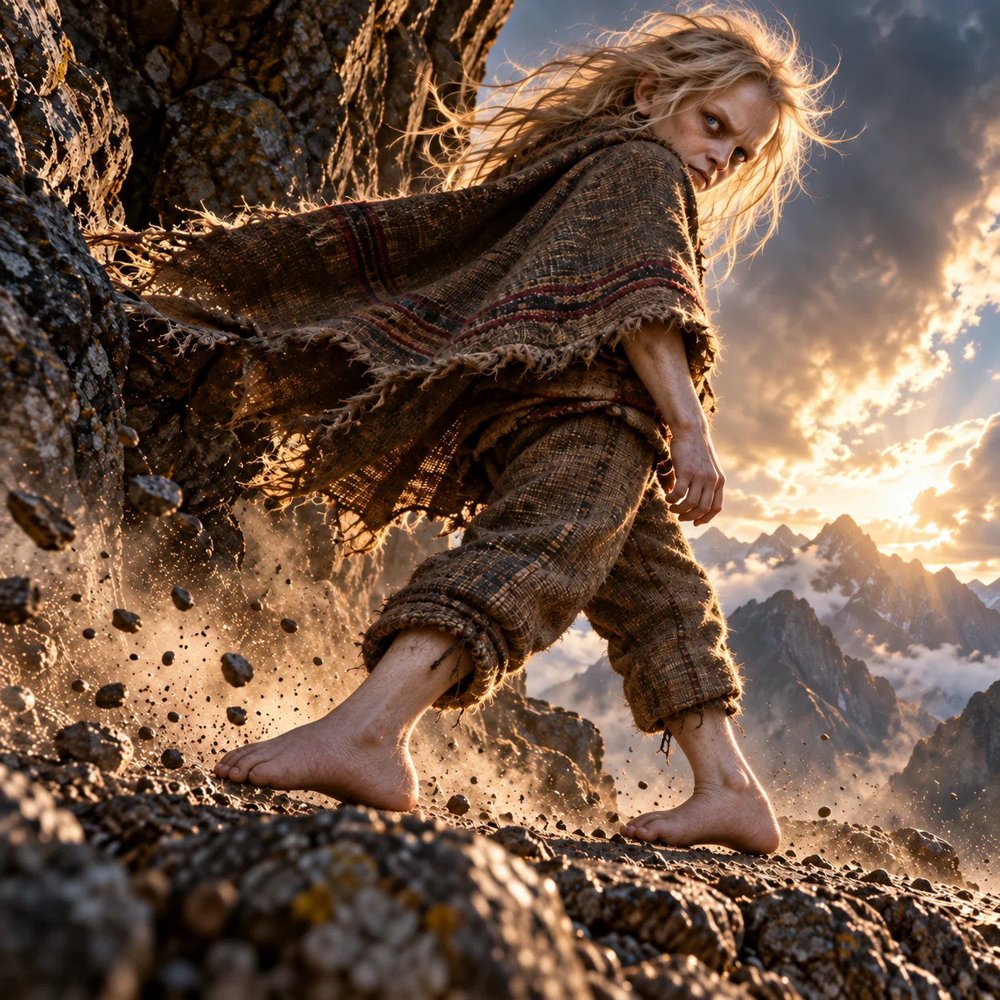
the small pale blond backward-footed Andean humanoid
Aura: A violent physical gust lifts grit and small stones across the ledge, grounded in the documented blow of wind; no victims, no sexual scenario [chuzalongo-c11]
Audit ciri dan sumber
- [object Object]
- [object Object]
- [object Object]
Native and200px personally viewed: one small pale blond humanoid, two blue eyes, rounded ears, two arms/two legs; both five-toed feet point left opposite right-facing torso/knees, c06/c07. Opaque cloak/trousers, unsettling backward glare, physical dust-lifting wind c11 on Andean ledge c01. All7Sangar checks yes after source-grounded reconsideration: nonsexual child-sized morphology valid; anomalous feet and active gust prevent ordinary/cute reading.
Review sumberONE original square premium painterly cinematic Mythics illustration of chuzalongo, the small pale blond backward-footed Andean humanoid.
ANATOMY: One small humanoid about one metre tall, one head, two pale-blue eyes, long blond hair, white skin, rounded ordinary human ears (no pointed elf ears), two arms and two legs, both feet rotated180degrees with toes pointing backwards, both ankles and feet shown in strict side profile, BOTH feet point LEFT while torso and knees face RIGHT; fully opaque rough cloak and trousers, bare reversed feet clearly visible [chuzalongo-c03, chuzalongo-c06, chuzalongo-c07, chuzalongo-c12]
MOMENT: Stride to the RIGHT from an Andean rock cleft in strict full-body side profile, torso/knees face RIGHT but BOTH feet face LEFT; glance back toward camera with an unsettling glare; cloak pulled by wind, both reversed feet clearly silhouetted on stone ledge
POWER: A violent physical gust lifts grit and small stones across the ledge, grounded in the documented blow of wind; no victims, no sexual scenario [chuzalongo-c11]
SCALE & CAMERA: extreme low angle; tight framing and foreshortening, distinguishing anatomy fully readable; being fills most of square; no invented gigantic size.
LIGHT & WEATHER: one dominant dying sun shaft through crags, airborne grit and dramatic rim light; only physical particles justified by action.
SURFACE: coarse opaque cloth, wind-tangled blond hair, bare skin and rugged stone.
SETTING: Andean crags in Ecuador [chuzalongo-c01]
MOOD: imposing awe or menace appropriate to documented disposition, never cute, calm or decorative. Living religious traditions treated reverently.
HARD CONSTRAINTS: ONE native square PNG minimum1024x1024; no text, lettering, glyphs, logo, border, frame or watermark; no extra heads, limbs or fingers; no design from film, game, anime or comic; no nudity or explicit gore; no generic glow aura, neon outline or energy ribbons.
EDIT the supplied image ONLY to repair BOTH bare feet. Keep creature, face, hair, clothes, action, wind, mountain and square framing exactly unchanged. Each foot must have one anatomical heel at its RIGHT end and exactly five toes grouped at its LEFT end. The current rightmost foot toes point right: change those toes to point LEFT. The current leftmost foot looks double-ended: remove the rightward extra toes and give it a natural heel at RIGHT. Both foot soles horizontal, both sets of five toes pointing LEFT, opposite RIGHTward knees and torso. No labels or arrows. This is the final anatomy correction.
Ciguapa
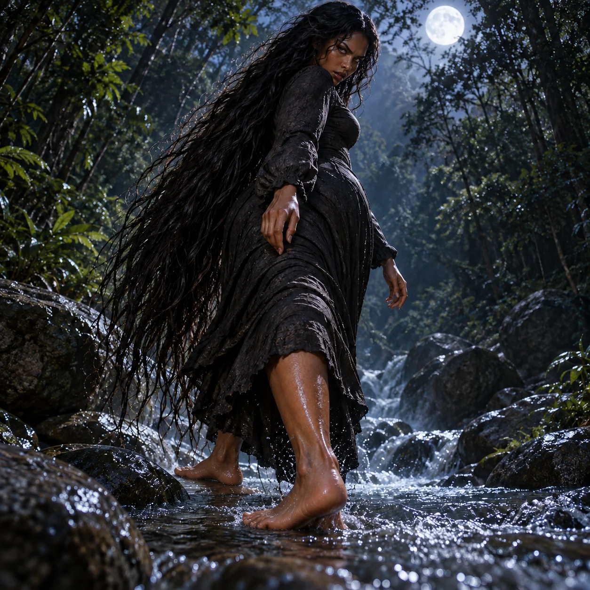
the long-haired backward-footed adult forest being
Aura: No visible magical beams or aura: predatory attraction expressed by documented eyes and song through focused gaze and parted lips [ciguapa-c06, ciguapa-c08]
Audit ciri dan sumber
- [object Object]
- [object Object]
- [object Object]
Native and200px observed: adult womanlike being, two arms/legs, both bare feet toes point left against rightward torso/knees, c02/c05; long hair reaches knees, full opaque dress. Intense backward predatory gaze and stepping river disturbance c06/c08, no beams or fabricated eyes. Frame-dominating uncanny inversion reads at200px;7Sangar checks yes, no nudity, text, glyphs or gore.
Review sumberONE original square premium painterly cinematic Mythics illustration of ciguapa, the long-haired backward-footed adult forest being.
ANATOMY: One adult womanlike being, one head, two eyes, knee-length long hair, two arms and two long legs, both bare feet reversed180degrees so toes point behind the direction of travel; both feet fully visible. Fully opaque loose high-neck long-sleeved dark dress ending above ankles, no exposed torso [ciguapa-c02, ciguapa-c05, ciguapa-c11]
MOMENT: Advance through a forest stream toward viewer with head turned in intense watchfulness; both reverse feet at waterline visible, hair flowing behind
POWER: No visible magical beams or aura: predatory attraction expressed by documented eyes and song through focused gaze and parted lips [ciguapa-c06, ciguapa-c08]
SCALE & CAMERA: extreme low angle; tight framing and foreshortening, distinguishing anatomy fully readable; being fills most of square; no invented gigantic size.
LIGHT & WEATHER: one dominant moonshaft through canopy, deep forest shadow and wet rim light; only physical particles justified by action.
SURFACE: knee-length wet hair, opaque rough dress and river stones.
SETTING: Mountain forest and river in El Cibao at night [ciguapa-c02, ciguapa-c03]
MOOD: imposing awe or menace appropriate to documented disposition, never cute, calm or decorative. Living religious traditions treated reverently.
HARD CONSTRAINTS: ONE native square PNG minimum1024x1024; no text, lettering, glyphs, logo, border, frame or watermark; no extra heads, limbs or fingers; no design from film, game, anime or comic; no nudity or explicit gore; no generic glow aura, neon outline or energy ribbons.
EDIT supplied image. Preserve the adult being, full opaque dress, hair, forest/river/night and square framing. Repair the farther LEFT-image bare foot: its toes currently point RIGHT, but MUST point LEFT, just like the nearer huge foot. Each foot must have exactly five natural toes at its LEFT end and a single heel at its RIGHT end. Both knees and torso travel RIGHT, both sets of toes point LEFT. No double-ended feet. Make the focused backward glance intensely predatory, eyes fixed toward viewer with lowered brows and no soft fashion-portrait expression. Do not invent eye glow or monster teeth.
Cihuateteo
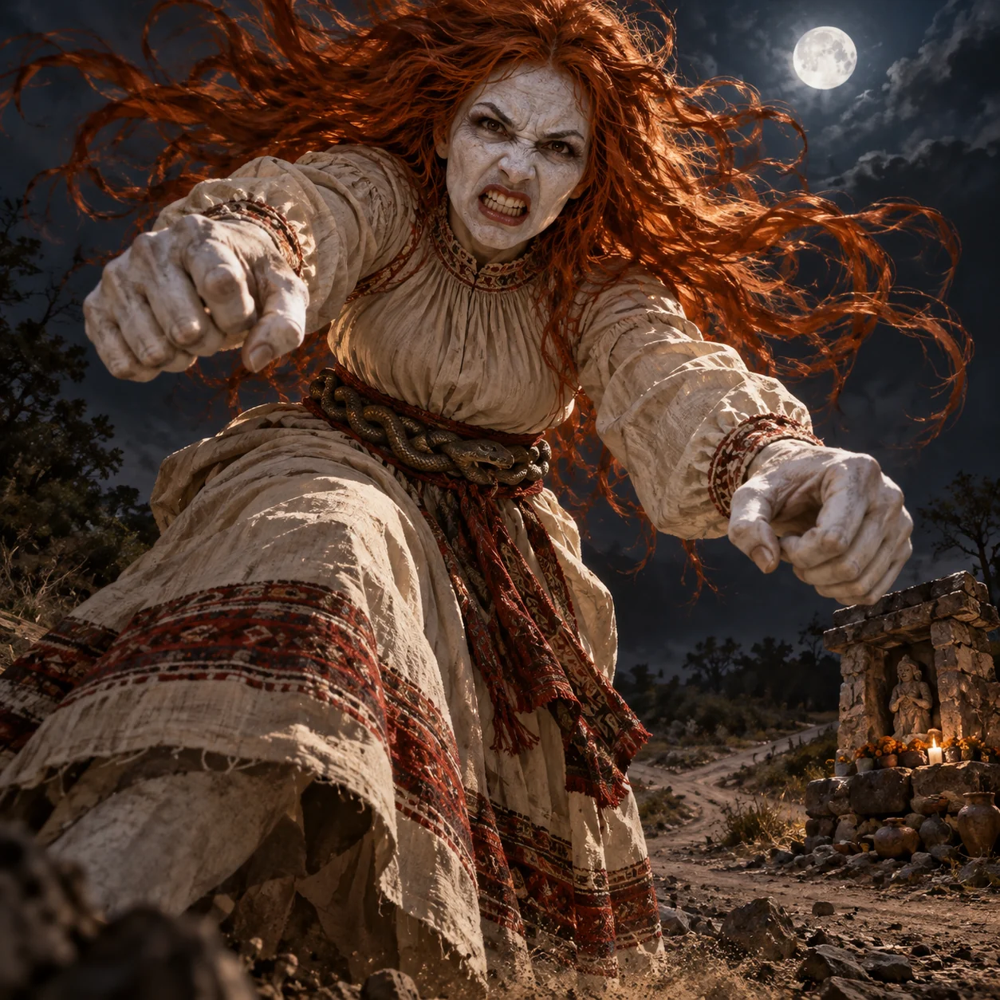
one of the Cihuateteo divine women in documented white-faced orange-haired iconography
Aura: No invented visible magic; formidable presence through sourced aggressive pose, white face and swirling orange hair [cihuateteo-c11, cihuateteo-c12]
Audit ciri dan sumber
- [object Object]
- [object Object]
- [object Object]
Native and200px: one forceful white-faced spirit, two arms/fists, orange dishevelled hair, human bared teeth, snake belt and full opaque blouse/skirt c11/c12/c16. Active forward descent/strike fills frame, nighttime crossroads and shrine c03/c15. No invented beam or seizure victim; source aggressive pose gives unmistakable menace. All7checks pass, no text/glyphs/nudity/gore.
Review sumberONE original square premium painterly cinematic Mythics illustration of cihuateteo, one of the Cihuateteo divine women in documented white-faced orange-haired iconography.
ANATOMY: One representative female spirit with one head, two eyes, two arms and two legs; face dead-white and arms/hands powdered white, swirling unkempt orange hair, bared ordinary human teeth and gums, fists clenched clawlike; opaque skirt with snake-shaped belt and fully opaque high-neck long-sleeved blouse [cihuateteo-c11, cihuateteo-c12, cihuateteo-c16]
MOMENT: Descend forward onto a dark crossroads, hair swirling, fists thrust toward viewer and teeth bared in a forceful aggressive moment
POWER: No invented visible magic; formidable presence through sourced aggressive pose, white face and swirling orange hair [cihuateteo-c11, cihuateteo-c12]
SCALE & CAMERA: extreme low angle; tight framing and foreshortening, distinguishing anatomy fully readable; being fills most of square; no invented gigantic size.
LIGHT & WEATHER: one dominant low moonshaft with dark copper highlights on orange hair; only physical particles justified by action.
SURFACE: chalk-white powdered skin, tangled orange hair and rough opaque cloth.
SETTING: Night crossroads with a small roadside shrine [cihuateteo-c03, cihuateteo-c15]
MOOD: imposing awe or menace appropriate to documented disposition, never cute, calm or decorative. Living religious traditions treated reverently.
HARD CONSTRAINTS: ONE native square PNG minimum1024x1024; no text, lettering, glyphs, logo, border, frame or watermark; no extra heads, limbs or fingers; no design from film, game, anime or comic; no nudity or explicit gore; no generic glow aura, neon outline or energy ribbons.
Dirawong
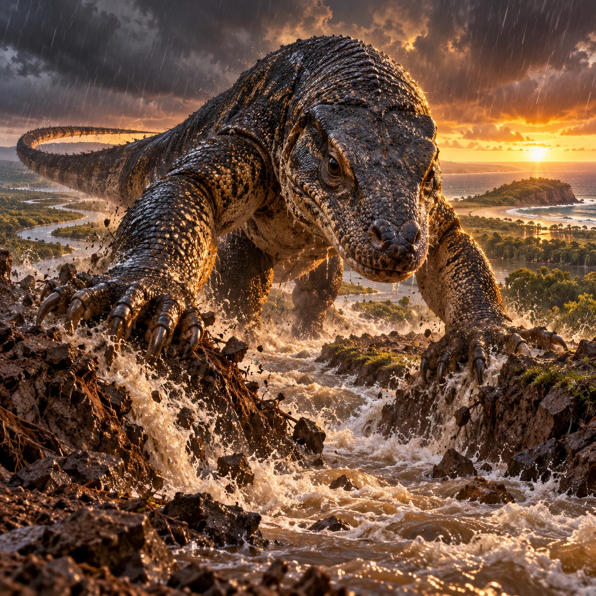
the Bundjalung goanna Creator Being physically shaping the river toward the coast
Aura: The documented pursuit jointlyformed RichmondRiversections c03/c09: show banks physically tearing/rising under creatorsteps, darkearth slabs sliding outward, water rushing into a NEW winding channel. Former windingsection behind acknowledges prior co-creation without depicting unknownSnakeanatomy. GoannaHeadland isidentifiedwithitsbody c04/c13, supporting coast-sizedancestralpresence. Rain c05, no glow/energy/magicfog. [dirawong-c03, dirawong-c04, dirawong-c05, dirawong-c09, dirawong-c13]
Audit ciri dan sumber
- [object Object]
- [object Object]
- [object Object]
Viewed native1254 and200px, plusleftforefootcrop confirms FIVE naturalmonitorclaws. Living ancestralgoannahead/twoeyes/fourlegs/taperingtail, no horns/wings/humanparts. Physical riverformation c03/c09 plainlyunderclaws: earthbanks rupture andslide, freshchannel fillswithwater towardcoast; tinywoodland andcoastalheadland showlandscapescale sourcedheadlandbodyc04/c13. Existingwindingsection behind; absentSnake notinvented. Rainc05 andprotectivecreator awe c14, no ordinarylizardbesideriver or passiveheadland; subject dominates200px. All7Sangarchecks pass, noFX/text/gore/sacredmotifs.
Review sumberONE original square premium painterly cinematic Mythics illustration of Dirawong, the Bundjalung goanna Creator Being physically shaping the river toward the coast.
ANATOMY: ONE living GOANNA ancestralbeing, ONE natural monitor-lizardhead/TWO eyes, FOUR monitorlegs with naturalclawedfeet, ONE longtaperingtail. NO horns/wings/spines/crown/humanparts or sacredpatterns. Natural rainwetdarkgoannascales, not a statue. Landscape-scale presence comes from bodyidentifiedwith GoannaHeadland, not from extraanatomy. [dirawong-c01, dirawong-c04, dirawong-c13, dirawong-c14]
MOMENT: DRIVE forward toward viewer during pursuit of the offscreen RainbowSnake, foreclaws wrenching banks apart and longtail sweeping earth toward the coast. Head confronts lowviewer, goannaBODY dominates; freshlyopened riverchannel surges directly under andbehind its powerful strides.
POWER: The documented pursuit jointlyformed RichmondRiversections c03/c09: show banks physically tearing/rising under creatorsteps, darkearth slabs sliding outward, water rushing into a NEW winding channel. Former windingsection behind acknowledges prior co-creation without depicting unknownSnakeanatomy. GoannaHeadland isidentifiedwithitsbody c04/c13, supporting coast-sizedancestralpresence. Rain c05, no glow/energy/magicfog. [dirawong-c03, dirawong-c04, dirawong-c05, dirawong-c09, dirawong-c13]
SCALE & CAMERA: extreme low angle; Extreme low fromnewriverbed, livinggoannahead/fourlimbs/body fills85percent frame, tinycoastalwoodland andwidefreshchannel as headlandscale comparator groundedc04/c13. Keep rivercreation underclaws unmistakably physical/readable200px.
LIGHT & WEATHER: ONE narrow warm storm-sunset light seam, strong rim light on subject, deep walnut shadows; physical dust/water spray appropriate to the act, never colored magicfog.
SURFACE: richly tactile natural materials: wet skin, coarse opaque cloth, tangled hair/fur, worn wood, dark earth and stone as anatomically appropriate; no plastic.
SETTING: RichmondRiver formation toward NewSouthWales coast andGoannaHeadland, churning newriver reaches sea; distant woodland outlines verysmall beside creator, no ceremonies/ritualmotifs. [dirawong-c03, dirawong-c09, dirawong-c12, dirawong-c13]
MOOD: Reverent overwhelming mythic awe for a living religious tradition. The being must dominate and make the viewer feel like bowing; decisive action, never ordinary animal/human snapshot, cute, static or decorative.
HARD CONSTRAINTS: ONE native square PNG minimum1024x1024; no text/letters/glyphs/logo/frame/border/watermark. No added heads, eyes, arms, legs or fingers; no unsupported horns/wings/chimeraparts. No film/game/anime/comic design. Clothed humanoid torso/hips fullyopaque, no nudity or explicit gore. No generic glow aura/neon/runes/energy ribbons. Source claimIDs never visible text.
Dragon turtle
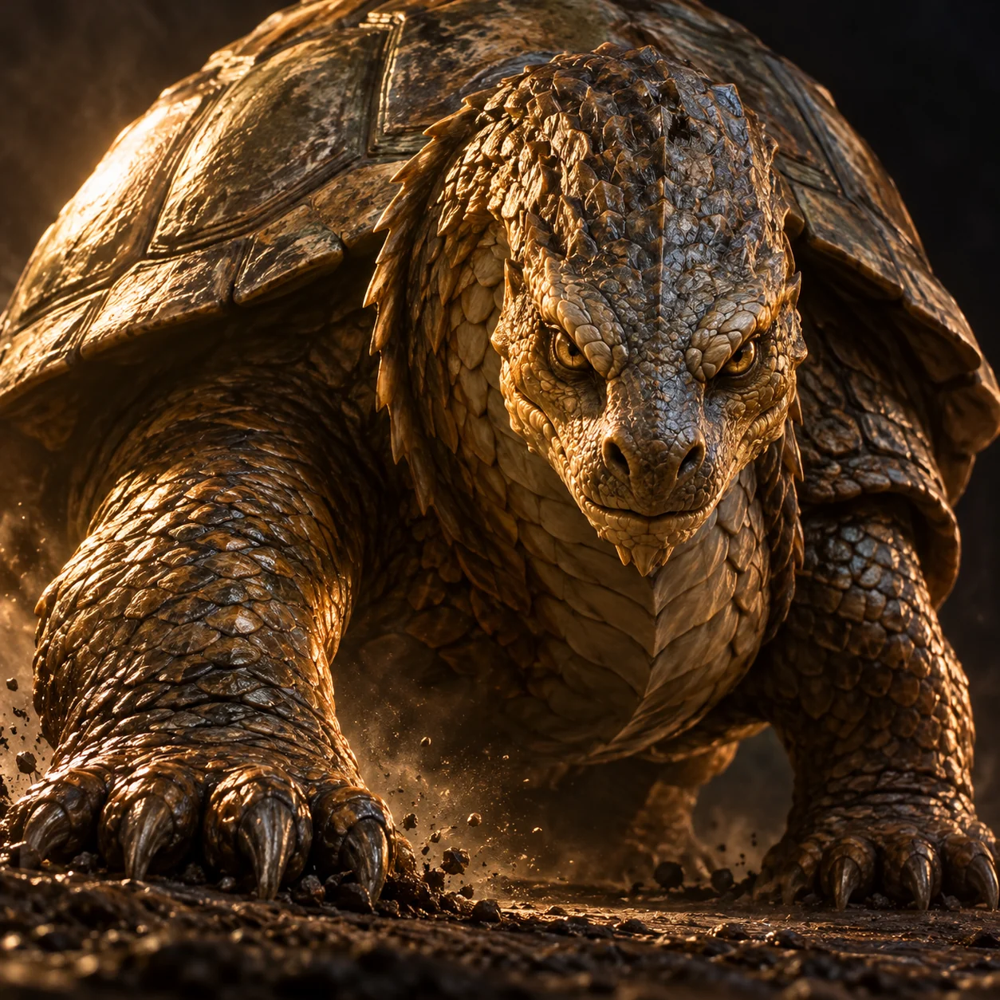
the original Chinese turtle-shell dragon-body mythic hybrid
Aura: No documented visible elemental power; imposing living hybrid through anatomy, determined action and light only [dragon-turtle-c01]
Audit ciri dan sumber
Recovered prior built-in native1254 PNG; inspected native and200px. All7Sangar checks pass: living shell-dragon hybrid dominates, forward footstep/head confront viewer, onehead/twoeyes/two visible frontfeet, no unsupported powers or game ornaments, no text/gore/design imitation. Ground dust is physical stepping contact, not magical effect.
Review sumberONE original square premium painterly cinematic Mythics illustration of dragon turtle, the original Chinese turtle-shell dragon-body mythic hybrid.
ANATOMY: One living turtle-shell and dragon-body hybrid, one reptilian dragon head, two eyes, large domed turtle shell, scaled dragon neck and body; only two front feet visible, rear body naturally hidden by shell and crop; no horns, wings, extra heads or imported game monster ornaments [dragon-turtle-c01]
MOMENT: Drive forward out of darkness, shell leaning into the frame and front feet firmly gripping the foreground, head thrust down toward viewer
POWER: No documented visible elemental power; imposing living hybrid through anatomy, determined action and light only []
SCALE & CAMERA: extreme low angle; tight framing and foreshortening, distinguishing anatomy fully readable; being fills most of square; no invented gigantic size.
LIGHT & WEATHER: one dominant warm sidelight, deep shadows and strong rim light; only physical particles justified by action.
SURFACE: weathered natural turtle shell, textured bronze-brown reptile scales.
SETTING: Unspecified dark ground plane, no invented geographic habitat []
MOOD: imposing awe or menace appropriate to documented disposition, never cute, calm or decorative. Living religious traditions treated reverently.
HARD CONSTRAINTS: ONE native square PNG minimum1024x1024; no text, lettering, glyphs, logo, border, frame or watermark; no extra heads, limbs or fingers; no design from film, game, anime or comic; no nudity or explicit gore; no generic glow aura, neon outline or energy ribbons.
Druk
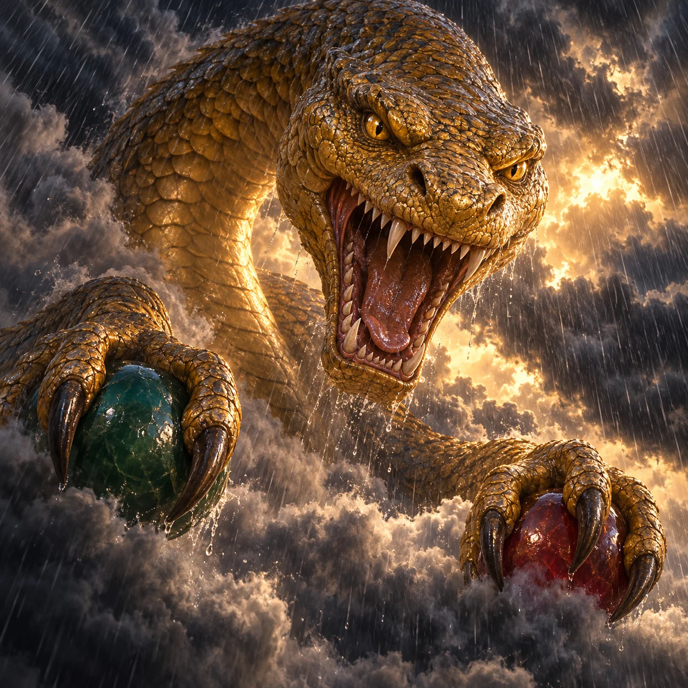
the revered thunder-dragon with jewels of Tibetan and Bhutanese mythology
Aura: Violent storm clouds and rain accompany its roar, the documented thunder as Cloud-Voice of dragon; no lightning breath and no jewel beams [druk-c05]
Audit ciri dan sumber
- [object Object]
- [object Object]
- [object Object]
Native and200 inspected;7Sangar checks pass. Dominant roaring dragon c01/c05, two held jewelsc02, twoeyes/onehead/twoforeclaws, rest of body masked by clouds. Storm rainc05 physical, no jewel beams/horns/wings or magic aura, no text. Reverent forceful thunder-dragon.
Review sumberONE original square premium painterly cinematic Mythics illustration of druk, the revered thunder-dragon with jewels of Tibetan and Bhutanese mythology.
ANATOMY: One living dragon head and upper curling neck, two natural eyes, smooth scaled skull, no horns, antlers, crown spines, wings, whiskers or manelike additions. Two visible foreclaws hold unmarked polished jewels; remaining body and limbs concealed naturally by storm clouds [druk-c01, druk-c02]
MOMENT: Lean down toward viewer from a violent storm cloud and open the mouth in a forceful thunderous roar, jewels gripped securely in foreground claws
POWER: Violent storm clouds and rain accompany its roar, the documented thunder as Cloud-Voice of dragon; no lightning breath and no jewel beams [druk-c05]
SCALE & CAMERA: extreme low angle; tight framing and foreshortening, distinguishing anatomy fully readable; being fills most of square; no invented gigantic size.
LIGHT & WEATHER: one dominant low amber storm break rim-lighting rain and polished jewels; only physical particles justified by action.
SURFACE: wet muted antique-gold scales and smoothly polished unlabeled stones.
SETTING: Storm above the Ralung Monastery foundation setting, only dark sky shown [druk-c05]
MOOD: imposing awe or menace appropriate to documented disposition, never cute, calm or decorative. Living religious traditions treated reverently.
HARD CONSTRAINTS: ONE native square PNG minimum1024x1024; no text, lettering, glyphs, logo, border, frame or watermark; no extra heads, limbs or fingers; no design from film, game, anime or comic; no nudity or explicit gore; no generic glow aura, neon outline or energy ribbons.
Dyrnwch
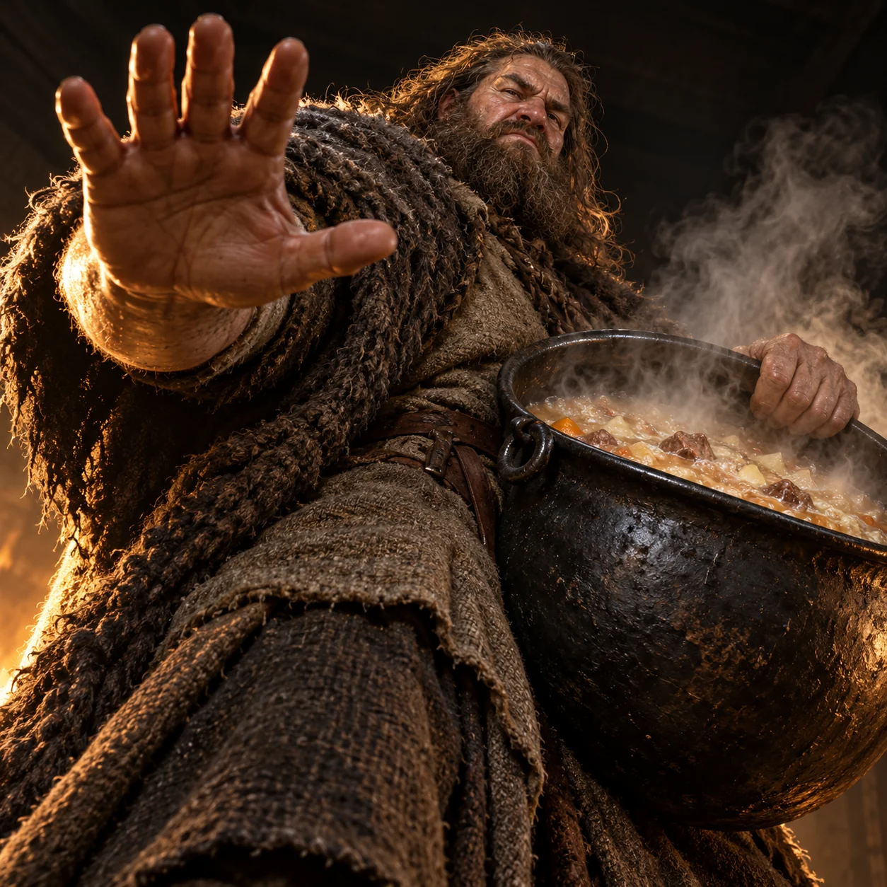
the Welsh giant owner of the miraculous cauldron
Aura: Food physically boils inside the cauldron, with ordinary rising steam; its documented discrimination of brave and cowardly is not invented as colored magic [dyrnwch-c10]
Audit ciri dan sumber
- [object Object]
- [object Object]
Native and200 inspected;7Sangar pass. Giant fillsframe, extreme below-knee camera and enlarged foreshortened forbidding palm establish dominance, forceful protectivereach c05. Cauldron c03/c10 visibly boils with physicalsteam.1head/2eyes/2arms, foregroundpalm5digits; opaqueclothes; no unsupported magic,text,gore.
Review sumberONE original square premium painterly cinematic Mythics illustration of dyrnwch, the Welsh giant owner of the miraculous cauldron.
ANATOMY: One male human-shaped giant, one head, two eyes, two arms, two legs; full opaque rough wool cloak and tunic. A large plain black iron cauldron held by rim in one hand [dyrnwch-c01, dyrnwch-c03]
MOMENT: Pull the heavy cauldron protectively close and thrust his free palm toward viewer, refusing to yield it
POWER: Food physically boils inside the cauldron, with ordinary rising steam; its documented discrimination of brave and cowardly is not invented as colored magic [dyrnwch-c10]
SCALE & CAMERA: extreme low angle; tight framing and foreshortening, distinguishing anatomy fully readable; being fills most of square; no invented gigantic size.
LIGHT & WEATHER: one dominant warm sidelight, deep shadows and strong rim light; only physical particles justified by action.
SURFACE: rough wool, weathered skin, hammered soot-dark iron.
SETTING: Dark interior ground without invented geographical features []
MOOD: imposing awe or menace appropriate to documented disposition, never cute, calm or decorative. Living religious traditions treated reverently.
HARD CONSTRAINTS: ONE native square PNG minimum1024x1024; no text, lettering, glyphs, logo, border, frame or watermark; no extra heads, limbs or fingers; no design from film, game, anime or comic; no nudity or explicit gore; no generic glow aura, neon outline or energy ribbons.
Пирĕшти
Menunggu gambar yang lolos audit
Erawan
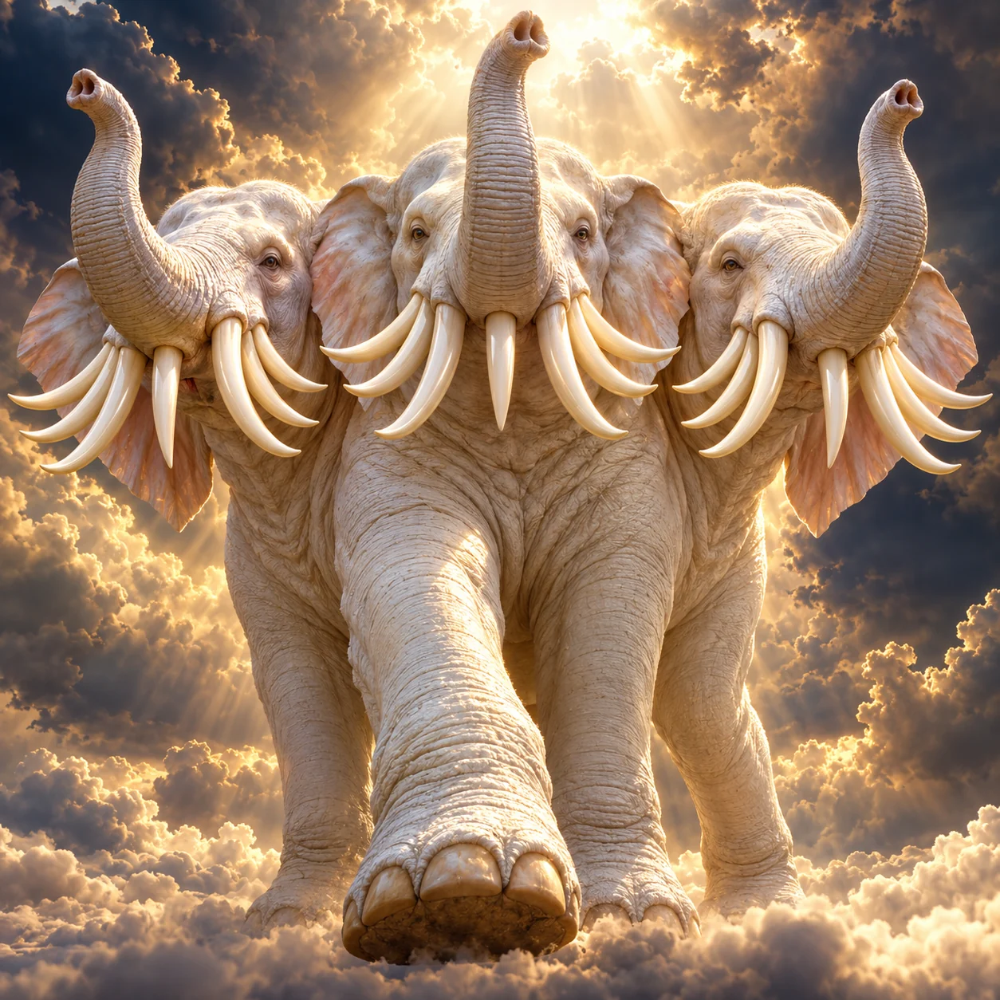
the mountain-scale three-headed white Thai elephant Erawan, each head bearing seven tusks
Aura: No independent elemental effect documented; grandeur through mountain scale and living anatomy only [erawan-c01, erawan-c02, erawan-c06]
Audit ciri dan sumber
- [object Object]
- [object Object]
Native and200 inspected;all7Sangar pass. Exactly3white elephantheads,3trunks, eachhead7distinct tusks:3left+3right+1central,21total visiblycounted. Onebody4legs, opaquecloudheaven c03/c06; towering mountain grandeurc02 and forceful forwardstep. No independent weatherpower,notext/buildings/gore. Firstattempt sides6 rejected;second correct.
Review sumberONE original square premium painterly cinematic Mythics illustration of erawan, the mountain-scale three-headed white Thai elephant Erawan, each head bearing seven tusks.
ANATOMY: ONE white living elephant body with exactly THREE elephant heads, left, center, right. Each head has exactly SEVEN distinct long ivory tusks: three on each side of its trunk plus one forward below the trunk, total21. Three separate trunks, six eyes, two large ears per head, four legs, no extra faces, no riders or other creatures [erawan-c01, erawan-c02, erawan-c06]
MOMENT: Stride forward toward viewer, all three trunks lifted apart to expose all seven tusks on every face
POWER: No independent elemental effect documented; grandeur through mountain scale and living anatomy only []
SCALE & CAMERA: extreme low angle; tight framing and foreshortening, distinguishing anatomy fully readable; being fills most of square; no invented gigantic size.
LIGHT & WEATHER: one warm heavenly sky break with ivory rimlight, deep walnut clouds; only physical particles justified by action.
SURFACE: natural deeply folded white elephant skin and polished ivory.
SETTING: Tavatimsa heaven, dark vast sky and small distant clouds at its feet [erawan-c03, erawan-c06]
MOOD: imposing awe or menace appropriate to documented disposition, never cute, calm or decorative. Living religious traditions treated reverently.
HARD CONSTRAINTS: ONE native square PNG minimum1024x1024; no text, lettering, glyphs, logo, border, frame or watermark; no extra heads, limbs or fingers; no design from film, game, anime or comic; no nudity or explicit gore; no generic glow aura, neon outline or energy ribbons.
CRITICAL CORRECTION: Previous output left and right heads had only6tusks each. ALL THREE faces look straight toward camera, mouths fully frontal. On EACH face: three large tusks fan LEFT, three large tusks fan RIGHT, and a SEVENTH lone vertical tusk grows centrally beneath raised trunk pointing down. The middle seventh tusk is separately readable on ALL3HEADS, not hidden by trunk or another tusk. Exactly21totaltusks. Three central lone tusks each centered below its own trunk. Simple clouds only, no palaces/buildings.
Pegasus Etiopia
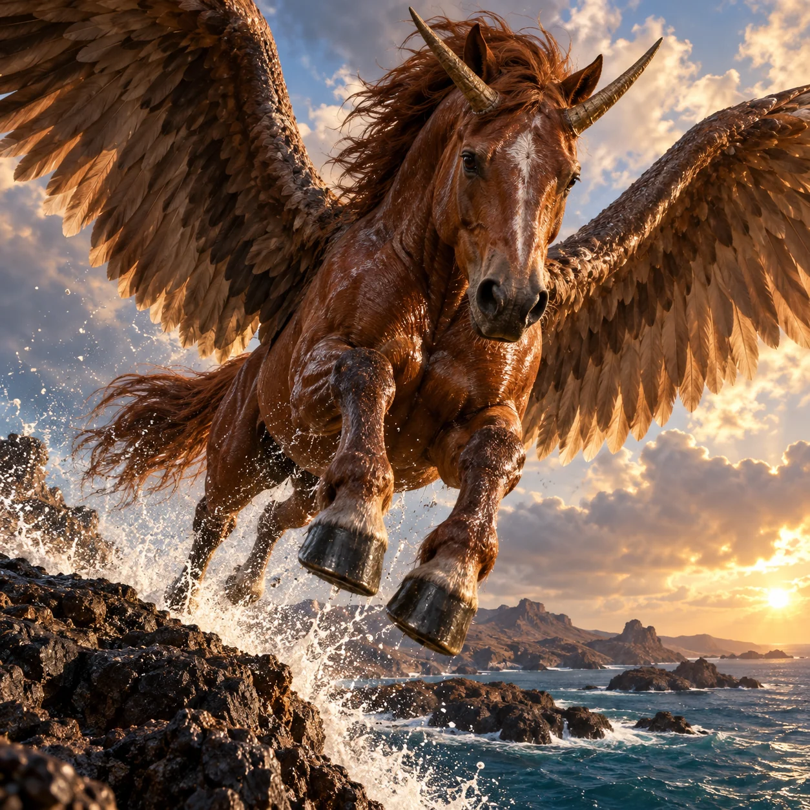
the two-horned winged horse of Pliny and medieval bestiaries
Aura: No elemental power documented; natural wingbeats and physical spray from surf below, no magical glow [ethiopian-pegasus-c01, ethiopian-pegasus-c04]
Audit ciri dan sumber
- [object Object]
- [object Object]
Native and200 inspected,all7Sangar pass. Exactly2horns,2wings,4hoovedlegs,1horsehead/tail. Forceful takeoff towardviewer at coastalrockisland c01, physicalsurf no specialmagic. Twohorns/wings clear at200, imposing closeflight notordinary horse. Notext/gore/designcopy.
Review sumberONE original square premium painterly cinematic Mythics illustration of ethiopian pegasus, the two-horned winged horse of Pliny and medieval bestiaries.
ANATOMY: One muscular horse head with exactly TWO plain straight horns growing from opposite sides of the forehead, two eyes, four horse legs ending in solid hooves, exactly TWO large feathered wings on its back, one natural horse tail. No antlers, beak, lion feet or extra appendages [ethiopian-pegasus-c01, ethiopian-pegasus-c04]
MOMENT: Launch off a rocky island edge toward viewer, hooves rising and both wings beating downward in a forceful takeoff
POWER: No elemental power documented; natural wingbeats and physical spray from surf below, no magical glow []
SCALE & CAMERA: extreme low angle; tight framing and foreshortening, distinguishing anatomy fully readable; being fills most of square; no invented gigantic size.
LIGHT & WEATHER: one low warm sunbreak side-light with deep shadows; only physical particles justified by action.
SURFACE: wet chestnut hair, layered brown feathers, rough natural horns.
SETTING: Red Sea island off Eritrean coast [ethiopian-pegasus-c01]
MOOD: imposing awe or menace appropriate to documented disposition, never cute, calm or decorative. Living religious traditions treated reverently.
HARD CONSTRAINTS: ONE native square PNG minimum1024x1024; no text, lettering, glyphs, logo, border, frame or watermark; no extra heads, limbs or fingers; no design from film, game, anime or comic; no nudity or explicit gore; no generic glow aura, neon outline or energy ribbons.
Gangi-kozō
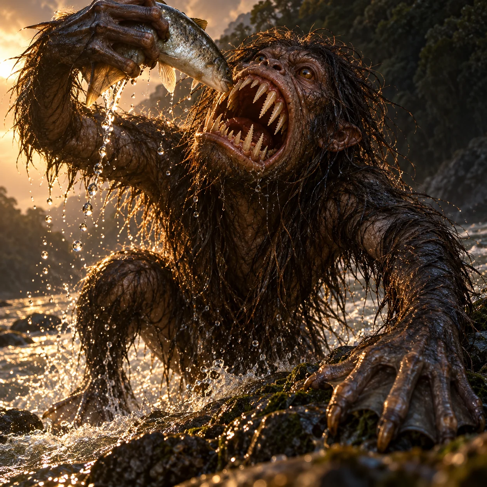
the hairy riverbank fish-hunting yokai described by Sekien
Aura: Documented river fish hunter caught mid-capture; only physical splash from movement, no magical water control [gangi-kozo-c02, gangi-kozo-c11]
Audit ciri dan sumber
- [object Object]
- [object Object]
- [object Object]
Native and200 inspected;all7Sangar pass. Hairymonkeylike riverbeing c02/c11,1head2eyes2arms2legs,webbedhands c04; hugeopenmouth long clearly sawtooth-serrated fileedges c04. Fishcapture c02/c11 and physicalwatersplash, nogore/magic/text/imported kappa headplate.02corrects smoothcanine01.
Review sumberONE original square premium painterly cinematic Mythics illustration of gangi kozo, the hairy riverbank fish-hunting yokai described by Sekien.
ANATOMY: One hairy monkey-like humanoid water spirit with one head, two eyes, two arms and two legs; dense matted body hair; webbed hands and toes, long jagged file-like teeth fully visible in the open mouth. No turtle shell, head water-dish, horns or bird beak [gangi-kozo-c02, gangi-kozo-c04, gangi-kozo-c11]
MOMENT: Lunge up from riverbank with a captured fish held toward the open saw-toothed mouth; wet hair flings river droplets
POWER: Documented river fish hunter caught mid-capture; only physical splash from movement, no magical water control [gangi-kozo-c02, gangi-kozo-c11]
SCALE & CAMERA: extreme low angle; tight framing and foreshortening, distinguishing anatomy fully readable; being fills most of square; no invented gigantic size.
LIGHT & WEATHER: one dominant warm sidelight, deep shadows and strong rim light; only physical particles justified by action.
SURFACE: matted wet black-brown fur, slick webbed skin, natural stained teeth.
SETTING: Dark wet riverbank beside flowing river [gangi-kozo-c02, gangi-kozo-c11]
MOOD: imposing awe or menace appropriate to documented disposition, never cute, calm or decorative. Living religious traditions treated reverently.
HARD CONSTRAINTS: ONE native square PNG minimum1024x1024; no text, lettering, glyphs, logo, border, frame or watermark; no extra heads, limbs or fingers; no design from film, game, anime or comic; no nudity or explicit gore; no generic glow aura, neon outline or energy ribbons.
CRITICAL TOOTH SHAPE: NOT smooth pointed canine fangs. EACH visible tooth is a long narrow flat metal-file-like natural ivory tooth with an obvious irregular sawtooth serrated EDGE, sharp visible jagged notches along both edges. Side-light and open mouth large in upperhalf to make these tooth serrations unambiguous. Keep webbedhands,fish,wetmonkeyhair.
Glaðr
Menunggu gambar yang lolos audit
Gyges
Menunggu gambar yang lolos audit
Headless Nun
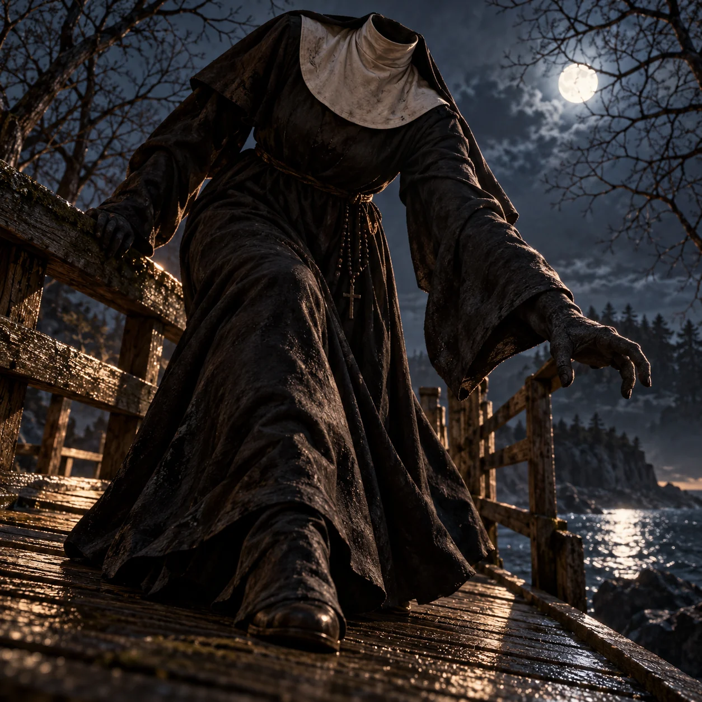
the roaming headless spirit of Sister Marie Inconnue
Aura: The documented headless ghost roams searching for her missing head; no emitted glow or floating skull invented [headless-nun-c05, headless-nun-c10]
Audit ciri dan sumber
- [object Object]
- [object Object]
- [object Object]
Native and200inspected all7Sangar pass: emptyheadlesshabit opening unmistakable,2arms/covered2legs,ghost advances/reaches on bridgec05/c10,c07. Fullyopaqueclothes/nogore/nowounds/no floatinghead/noauras. Lowcamera/longreachinghand makes apparitionmenacing and dominant;moon ordinarysettinglight. Notext.
Review sumberONE original square premium painterly cinematic Mythics illustration of headless nun, the roaming headless spirit of Sister Marie Inconnue.
ANATOMY: One adult female ghostly nun body with NO HEAD and NO FACE, no head floating elsewhere; two arms, two legs; fully opaque black habit covering whole body and neck opening, long sleeves and skirt, no exposed wound or blood [headless-nun-c02, headless-nun-c03, headless-nun-c05]
MOMENT: Advance across the wooden footbridge toward viewer and reach down over its rail in desperate searching motion; skirt swept forward
POWER: The documented headless ghost roams searching for her missing head; no emitted glow or floating skull invented [headless-nun-c05, headless-nun-c10]
SCALE & CAMERA: extreme low angle; tight framing and foreshortening, distinguishing anatomy fully readable; being fills most of square; no invented gigantic size.
LIGHT & WEATHER: one low moon visible through bare branches, pale rimlight and deep warm shadows; only physical particles justified by action.
SURFACE: worn heavy black fabric, rough wet wood.
SETTING: Crow Brook wooden footbridge at French Fort Cove at night [headless-nun-c01, headless-nun-c06, headless-nun-c07]
MOOD: imposing awe or menace appropriate to documented disposition, never cute, calm or decorative. Living religious traditions treated reverently.
HARD CONSTRAINTS: ONE native square PNG minimum1024x1024; no text, lettering, glyphs, logo, border, frame or watermark; no extra heads, limbs or fingers; no design from film, game, anime or comic; no nudity or explicit gore; no generic glow aura, neon outline or energy ribbons.
Hiderigami
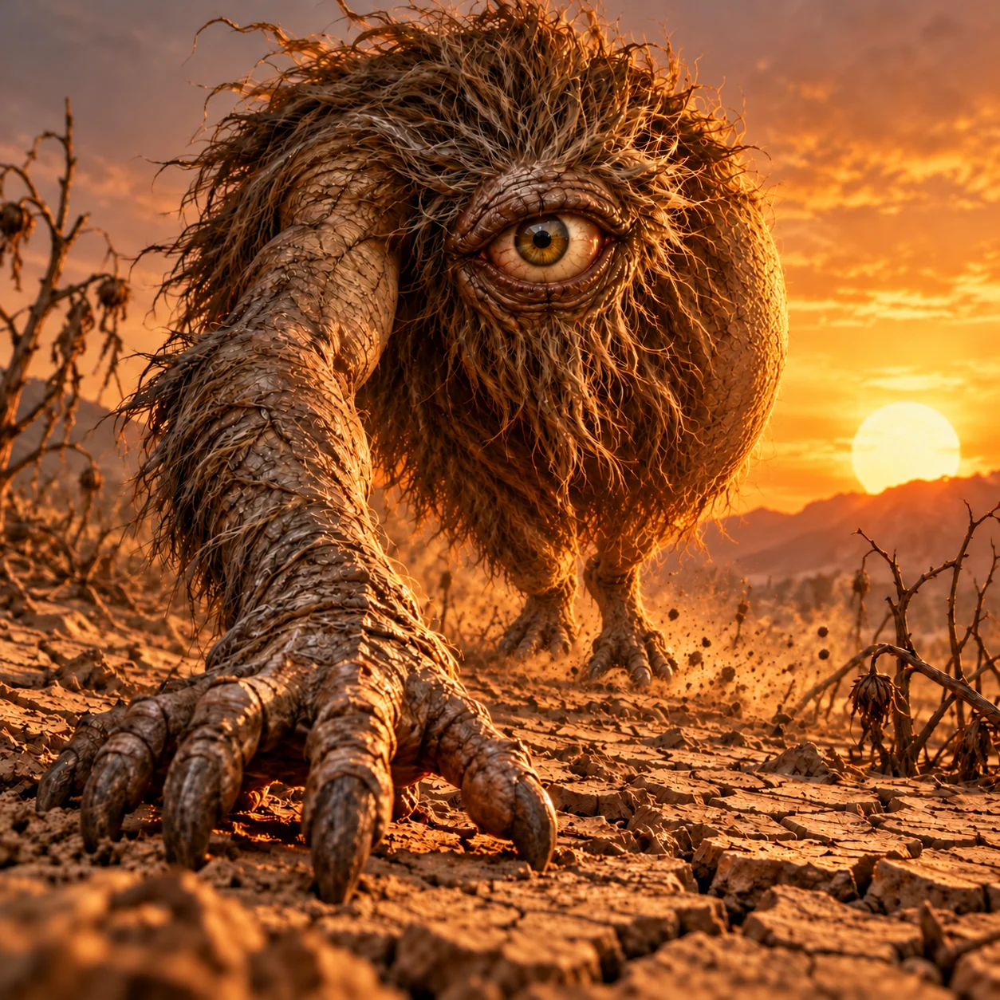
Sekien variant of Hiderigami as a one-armed one-eyed drought beast
Aura: Drought it brings expressed by entirely dry cracked soil and withered plants, no fire breath or heat beams [hiderigami-c01, hiderigami-c11]
Audit ciri dan sumber
- [object Object]
- [object Object]
- [object Object]
Native1254 and200px inspected after finalpreciseedit: EXACTLY1foregroundleftarm/5fingerhand,1centraleye c09; smootharmlessrightflank has no appendage. Twohindlegs/feet are clearlybehindlowerpelvis underbody. Runningcontactdust,drycrackedsoil,witheredplants physicaldrought c01/c11; no beams/fire/horns/othergoddessvariants. Dominantcloseeye/hand sinisterat200,notext/gore. All7Sangar pass.
Review sumberEDIT the supplied Hiderigami image. ONE original square premium painterly cinematic Mythics illustration of hiderigami, Sekien variant of Hiderigami as a one-armed one-eyed drought beast.
ANATOMY: One small beast with exactly ONE ARM and exactly ONE EYE, no second arm or hidden eye; squat hairy body, one centered face eye, two bent hind legs. The single long arm thrust to foreground; opposite shoulder smooth and armless. No horns or wings [hiderigami-c09]
MOMENT: Skitter toward viewer across dry cracked earth, its single hand planted violently while hind legs leap
POWER: Drought it brings expressed by entirely dry cracked soil and withered plants, no fire breath or heat beams [hiderigami-c01, hiderigami-c11]
SCALE & CAMERA: extreme low angle; tight framing and foreshortening, distinguishing anatomy fully readable; being fills most of square; no invented gigantic size.
LIGHT & WEATHER: one hot low setting sun rimlight, drydust kicked by feet; only physical particles justified by action.
SURFACE: tangled dry coarse fur and cracked natural hide.
SETTING: A drought-stricken dry landscape with no named geography invented [hiderigami-c01, hiderigami-c10]
MOOD: imposing awe or menace appropriate to documented disposition, never cute, calm or decorative. Living religious traditions treated reverently.
HARD CONSTRAINTS: ONE native square PNG minimum1024x1024; no text, lettering, glyphs, logo, border, frame or watermark; no extra heads, limbs or fingers; no design from film, game, anime or comic; no nudity or explicit gore; no generic glow aura, neon outline or energy ribbons.
TARGETED CORRECTION: REMOVE THE ENTIRE RIGHT HANGING FOREARM AND HAND (viewer right under shoulder near center-right). Replace it with dark background and smooth uninterrupted armless flank. Keep the existing single LEFT foreground arm and its hand unchanged. Keep one centraleye unchanged. Add NO arm anywhere. ExactlyTWO hindlegs must arise from a low pelvis BEHIND body, shortbentknees and distinct rear FEET touchinggroundbehindtorso, not hanging hands. The rightupperflank from eye to hip must have absolutely NO appendage. Preserve drysoil,droughtplants,mattedfur,light,moment,1eyedominance. Native squarePNG.
FINAL PRECISE EDIT: Remove EVERYTHING of the hanging appendage on VIEWER RIGHT of the creature, from its upper round joint through its bottom dangling fingers. The whole area to right of the furry belly must become EMPTY SUNSET BACKGROUND. No round elbow/knee blob,no wrist,no danglinghand,no appendage along that entirerightsilhouette. Existing single giant LEFT arm and centraleye stay EXACTLY unchanged. Hindlegs are tiny and lowbehind pelvis in the center of the background, directly beneathbelly, and may be partlyoccluded by the body; never at rightshoulder. Groundbehindforearm may contain two small clearlyrearfeet together, no hanginghands.
Holawaka
Menunggu gambar yang lolos audit
Hong (rainbow-dragon)
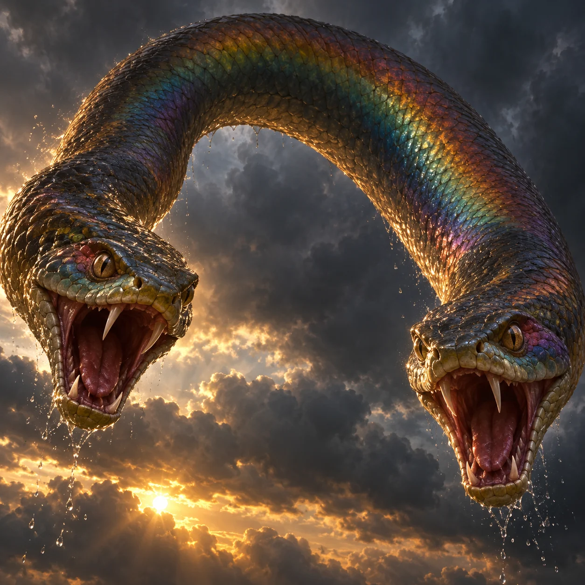
the early arched two-ended serpent depiction of Hong
Aura: The living rainbow dragon is an ill omen appearing after rainfall; subtle natural rainbow colors on scales from postrain light, not neon ribbons or power beams [hong-rainbow-dragon-c05]
Audit ciri dan sumber
- [object Object]
- [object Object]
- [object Object]
Native1254 and200px inspected: EXACTLY2serpentheads at oppositeends of1uninterruptedarchedbody c01/c03/c07, no extratail/limbs/horns. Bothheads loweropenmouths towardviewer; naturalwetmulticolor scales editorialrainbowrendering,c05postrainomen with no emission/powerbeam. Dominantlowcamera/action,notext/gore. All7Sangar pass.
Review sumberONE original square premium painterly cinematic Mythics illustration of hong rainbow dragon, the early arched two-ended serpent depiction of Hong.
ANATOMY: Exactly TWO smooth reptilian serpent heads, one at EACH OPPOSITE END of a SINGLE uninterrupted arched snake body, no tail beyond either head, no branches; each head twoeyes and open mouth. No legs, arms, wings, horns, antlers, whiskers or mane [hong-rainbow-dragon-c01, hong-rainbow-dragon-c03, hong-rainbow-dragon-c07]
MOMENT: Bend the single arch above camera and lower BOTH end-heads toward viewer, mouths open; entire connecting arched body visible
POWER: The living rainbow dragon is an ill omen appearing after rainfall; subtle natural rainbow colors on scales from postrain light, not neon ribbons or power beams [hong-rainbow-dragon-c05]
SCALE & CAMERA: extreme low angle; tight framing and foreshortening, distinguishing anatomy fully readable; being fills most of square; no invented gigantic size.
LIGHT & WEATHER: one low sunbreak after rain, antique-gold rimlight and damp dark scales; only physical particles justified by action.
SURFACE: wet smooth snake scales with subtle muted multicolor reflections.
SETTING: Dark sky just after a rain shower [hong-rainbow-dragon-c05]
MOOD: imposing awe or menace appropriate to documented disposition, never cute, calm or decorative. Living religious traditions treated reverently.
HARD CONSTRAINTS: ONE native square PNG minimum1024x1024; no text, lettering, glyphs, logo, border, frame or watermark; no extra heads, limbs or fingers; no design from film, game, anime or comic; no nudity or explicit gore; no generic glow aura, neon outline or energy ribbons.
Hudson River Monster
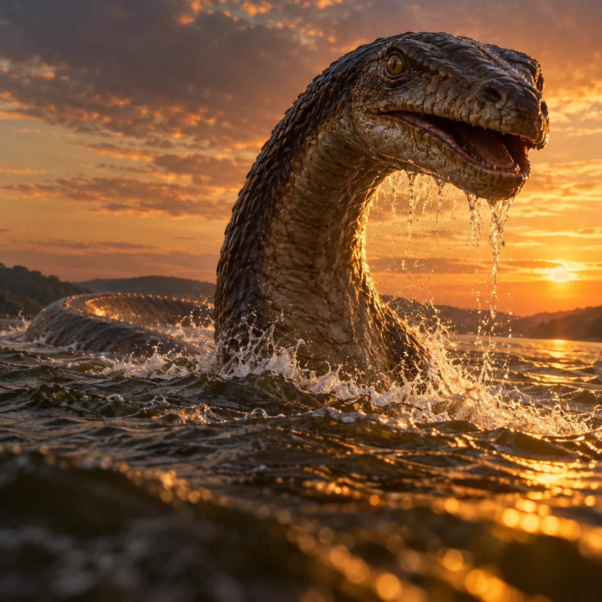
Alleged1886 hundred-foot sea serpent account; not2006 manatee and not claimed real species.
Aura: Threat comes from the reported huge head and rearing serpent body (hudson-river-monster-c06).
Audit ciri dan sumber
- [object Object]
- [object Object]
- [object Object]
Native and200px inspected; seven checks pass. One huge serpent head, two normal eyes (far eye angle-occluded), limbless body trails through river in broad coils. Rearing waterline moment and wet dripping head, no horns/fins/dinosaur limbs or oversized fangs. Scale and imposing silhouette remain readable at200px. Physical splashes only c06; no text/glyphs/gore or copied mural.
Review sumberONE original square premium painterly cinematic Mythics illustration of Hudson River Monster, Kipsy in the alleged1886 huge-headed sea-serpent account. Native square PNG at least 1024 by 1024 pixels.
ANATOMY: one huge serpent head with two eyes, one long limbless serpentine body; no horns, ears, wings, fins or invented dinosaur anatomy [hudson-river-monster-c01, hudson-river-monster-c06]
MOMENT: REAR from dark river water toward the low viewer, great head rising ten feet above surface and body turning behind, jaws parting without exaggerated fangs
POWER: no documented supernatural power; only physical river splash from the reported rearing movement [hudson-river-monster-c06]
SCALE & CAMERA: extreme low waterline angle; documented100-foot body trails behind head, near splashes give scale
LIGHT & WEATHER: one low warm sunset shaft; deep walnut shadows and strong rim light
SURFACE: wet slate-brown scales and dark river spray
SETTING: Hudson River with distant banks kept minimal, no Statue of Liberty or named building [hudson-river-monster-c01, hudson-river-monster-c06]
MOOD: imposing and awe-inspiring or menacing according to documented character; never cute, calm, tame or decorative. Being dominates and is striking at200px.
HARD CONSTRAINTS: no text, lettering, glyphs, logos, border, frame or watermark; no extra heads, eyes, limbs or fingers; no designs from films, games, anime or comics; no nudity, gore or visible wounds; no generic luminous aura, neon outline, energy ribbons or coloured magical fog. Bracketed claimIDs are instructions, never visible text.
Huoshu
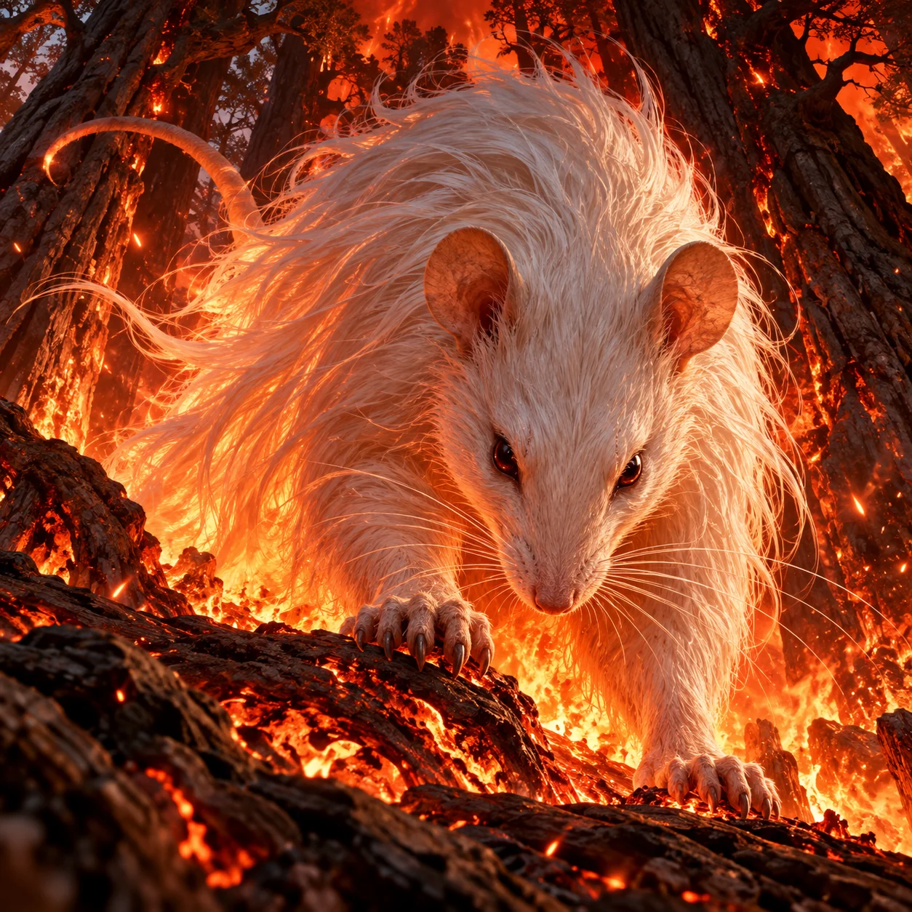
Shenyijing thousand-jin long white-haired mouse, not rat-sized Yan-island variant.
Aura: Awe comes from the great white-haired mouse emerging unhurt from fire in inexhaustible trees (huoshu-c07, huoshu-c09).
Audit ciri dan sumber
- [object Object]
- [object Object]
- [object Object]
Native and200px viewed; all seven checks pass. One natural mouse head/two eyes/two round ears, four-leg body with hindlegs under long fur, one tail trailing upper-left. Long fine white fur clearly distinct against real habitat fire; imposing forward climbing moment. Tree trunks remain standing/inexhaustible in flames. No horns, reptile additions, flamebreath, text/glyphs/gore or generic body glow. At200px supernatural fire-dwelling great mouse remains unmistakable.
Review sumberONE original square premium painterly cinematic Mythics illustration of Huoshu, the large fire-dwelling white-haired mouse of the Shenyijing account. Native square PNG at least 1024 by 1024 pixels.
ANATOMY: one natural mouse head with two eyes and two round ears, four rodent legs and one long rodent tail; exceedingly long fine WHITE silklike hairs, no horns or reptile parts [huoshu-c04, huoshu-c07]
MOMENT: EMERGE toward viewer from fire between inexhaustible tree trunks, white hair streaming, forepaws climbing over a glowing ember while head peers down directly
POWER: animal lives within real fire; fur shows red firelight in fire and white outside, not a magic energy outline or flame breath; trees withstand the fire [huoshu-c02, huoshu-c07, huoshu-c09]
SCALE & CAMERA: extreme low angle, large documented thousand-jin mouse fills frame, ordinary small embers and tree base for scale
LIGHT & WEATHER: real habitat fire is only dominant orange-red light; deep black tree shadows, sparks physically from fire
SURFACE: singed-looking white silky strands lit by real flames, mouse skin, ember and unconsumed bark
SETTING: southern Fire Mountain amid inexhaustible trees, as Shenyijing account [huoshu-c09]
MOOD: imposing and awe-inspiring or menacing according to documented character; never cute, calm, tame or decorative. Being dominates and is striking at200px.
HARD CONSTRAINTS: no text, lettering, glyphs, logos, border, frame or watermark; no extra heads, eyes, limbs or fingers; no designs from films, games, anime or comics; no nudity, gore or visible wounds; no generic luminous aura, neon outline, energy ribbons or coloured magical fog. Bracketed claimIDs are instructions, never visible text.
Jackalope
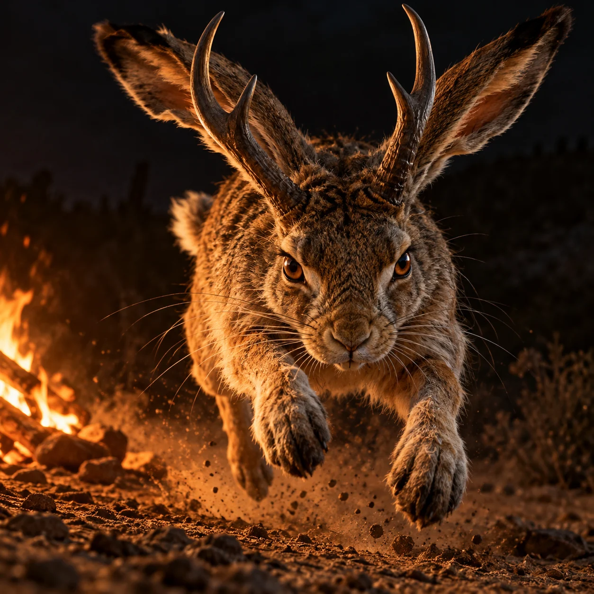
Living jackrabbit with antelope horns, not taxidermy deer-antler variant or Persian unicorn rabbit.
Aura: Danger comes from horn-first motion and source goring warning (jackalope-c05, jackalope-c14).
Audit ciri dan sumber
- [object Object]
- [object Object]
- [object Object]
Native and200px inspected; seven checks pass. One hare head/two eyes/two long ears, exactly two pointed modestly forked antelope horns, hare forepaws/hindquarters and short tail. Forward charging leap, sharp focused eyes and horn-first threat c14. No deer antler rack, carnivore fangs, oversized body or magical lightning. Campfire provides grounded side light c15. At200px horns and confrontation remain distinct; no text/gore.
Review sumberONE original square premium painterly cinematic Mythics illustration of Jackalope, the dangerous horned jackrabbit of North American tall tales. Native square PNG at least 1024 by 1024 pixels.
ANATOMY: one jackrabbit head, two eyes, two long hare ears, exactly two pointed ANTELOPE horns, four hare legs and short hare tail; horns pointed and modestly forked like antelope, NOT deer antlers; natural hare incisors only, no carnivore fangs [jackalope-c05]
MOMENT: CHARGE low toward viewer with horns thrust forward, long ears swept backward, forepaws airborne and hindlegs launching; sharp intent eyes
POWER: documented goring danger conveyed by the thrust horns, no invented magic or lightning power [jackalope-c14]
SCALE & CAMERA: extreme low angle; close foreshortened framing creates dominance, no invented gigantic size
LIGHT & WEATHER: single campfire side light, deep brown night shadows, ordinary dust kicked by feet
SURFACE: coarse dusty hare fur, ridged keratin horns, rough earth
SETTING: dark ground at an Old West campfire setting of its tale, small fire edge only, no cowboys or signs [jackalope-c15]
MOOD: imposing and awe-inspiring or menacing according to documented character; never cute, calm, tame or decorative. Being dominates and is striking at200px.
HARD CONSTRAINTS: no text, lettering, glyphs, logos, border, frame or watermark; no extra heads, eyes, limbs or fingers; no designs from films, games, anime or comics; no nudity, gore or visible wounds; no generic luminous aura, neon outline, energy ribbons or coloured magical fog. Bracketed claimIDs are instructions, never visible text.
Jiaotu
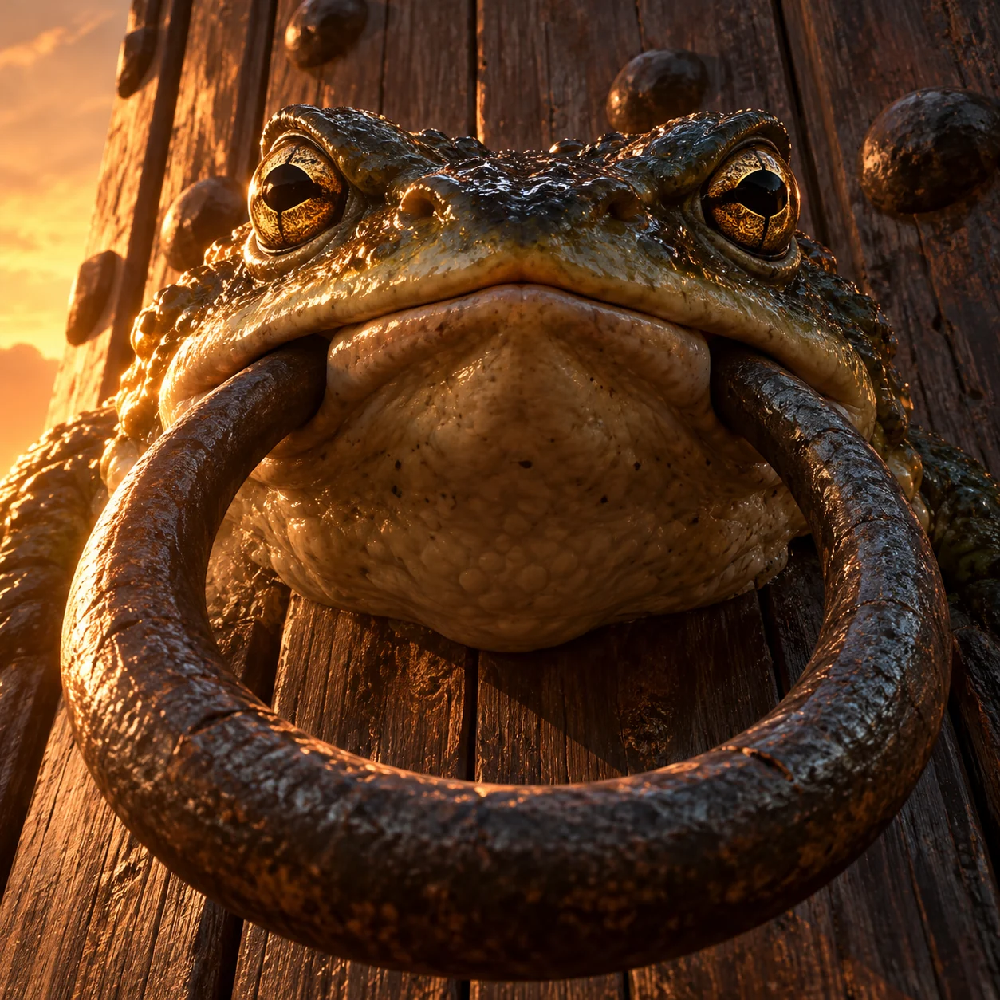
Frog-like living guardian and door-ring account, not mixed with primary-text snail form.
Aura: Awe comes from the unusual live frog-like door-ring guardian confronting an entrant (jiaotu-c02, jiaotu-c03, jiaotu-c04).
Audit ciri dan sumber
- [object Object]
- [object Object]
Recovered prior successful built-in output, inspected native1254square and200px. All seven Sangar checks pass: one wet living frog-like head/two eyes with no horns or whiskers, mouth actively clamping one iron ring; tight low camera and wary direct gaze make unusual guardian imposing. No lower limb claims invented; closed wood door c03/c04, no supernatural effects. No text, border, franchise cues, nudity or gore.
Review sumberONE original square premium painterly cinematic Mythics illustration of Jiaotu, the frog-like door-ring guardian among Chinese dragon sons. Native square PNG at least 1024 by 1024 pixels.
ANATOMY: one living FROG-LIKE head, two eyes and broad amphibian mouth holding one plain heavy iron door ring; head and throat only, lower body/limbs outside crop; no dragon horns, beard, whiskers or snail shell combined [jiaotu-c02, jiaotu-c04]
MOMENT: CLAMP its broad mouth around door ring and TURN directly toward approaching viewer at the closed doorway, muscles tensing; determined living guardian not a metal carving
POWER: no documented power; physical clamp and wary gaze express dislike of strangers entering, no magically slamming doors [jiaotu-c03, jiaotu-c04]
SCALE & CAMERA: extreme low angle; close foreshortened framing creates dominance, no invented gigantic size
LIGHT & WEATHER: one low warm sunset shaft; deep walnut shadows and strong rim light
SURFACE: wet pebbled amphibian skin, worn iron ring and old door wood
SETTING: closed door with ring, close cropped and uninscribed [jiaotu-c04]
MOOD: imposing and awe-inspiring or menacing according to documented character; never cute, calm, tame or decorative. Being dominates and is striking at200px.
HARD CONSTRAINTS: no text, lettering, glyphs, logos, border, frame or watermark; no extra heads, eyes, limbs or fingers; no designs from films, games, anime or comics; no nudity, gore or visible wounds; no generic luminous aura, neon outline, energy ribbons or coloured magical fog. Bracketed claimIDs are instructions, never visible text.
joint snake
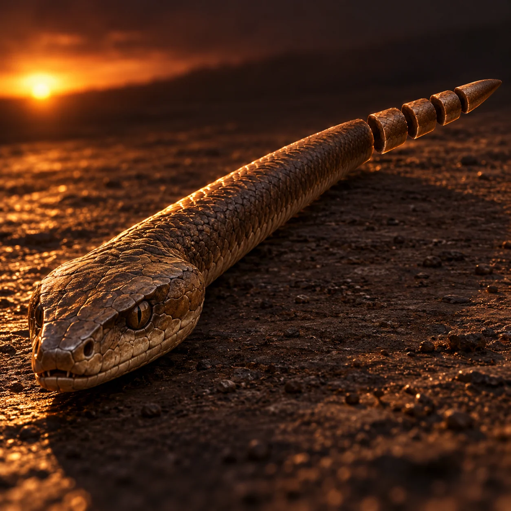
Legendary self-reassembling snake, not a claim that actual glass lizards can rejoin.
Aura: Threat comes from bloodless pieces actively drawing into a snake behind its poised head (joint-snake-c02, joint-snake-c05).
Audit ciri dan sumber
- [object Object]
- [object Object]
- [object Object]
Native1254 and200px inspected; all seven checks pass. One serpent head/two eyes (far eye partly occluded by threequarter perspective), zero limbs, rigid near-straight body c05 and four small separate clean tail segments reconnecting c02/c05. Severe near-camera eye and uncanny disconnection read at200px. No gore or invented power/letters. First cute result and second curved result archived; final correction uses rigid rod staging.
Review sumberONE original square premium painterly cinematic Mythics illustration of joint snake, the Southern American snake said to break apart and rejoin. Native square PNG at least 1024 by 1024 pixels.
ANATOMY: one serpent head, two eyes, one otherwise limbless nearly straight rigid snake body; hard parchmentlike smooth skin; rear body split into several short clean segments, with no blood or exposed organs; no extra heads [joint-snake-c01, joint-snake-c02, joint-snake-c05]
MOMENT: SNAP its dry separated tail segments back into alignment as the near-straight neck and head slide toward close viewer, gaps between four or five small rear segments clearly visible before reconnection
POWER: documented breaking and reassembling physically shown by separated pieces drawing into a single chain; no light ribbons, sparks or aura [joint-snake-c02, joint-snake-c05]
SCALE & CAMERA: extreme low angle; close foreshortened framing creates dominance, no invented gigantic size
LIGHT & WEATHER: one low warm sunset shaft; deep walnut shadows and strong rim light
SURFACE: glass-smooth matte-brown snake skin, parchment-hard closed segment faces and dry ground
SETTING: Southern United States tale, neutral dark ground; no specific habitat invented [joint-snake-c01]
MOOD: imposing and awe-inspiring or menacing according to documented character; never cute, calm, tame or decorative. Being dominates and is striking at200px.
HARD CONSTRAINTS: no text, lettering, glyphs, logos, border, frame or watermark; no extra heads, eyes, limbs or fingers; no designs from films, games, anime or comics; no nudity, gore or visible wounds; no generic luminous aura, neon outline, energy ribbons or coloured magical fog. Bracketed claimIDs are instructions, never visible text.
CORRECTION: Use a narrow angular snake head with small slit-pupil eyes in deep sockets, tense jaw slightly open, realistic restrained natural snake teeth. Do not use large round mascot eyes. Head must be severe and alert, scales glass-smooth and matte, body mostly straight and rigid. Separated short tail pieces should lie almost level just above ground, not arc into a floating decorative curve.
CORRECTION: Body must be straight like a rigid wooden rod from behind head all the way to detached tail pieces. Side-three-quarter camera places head bottom-left and straight body diagonally to upper-right. Absolutely NO loop, coiling, S-curve, neck arch or bent body. Mouth close to closed with only tiny natural teeth, no exaggerated fangs. Detached pieces under an inch long are small compared with head, low to ground with tiny gaps.
Kanas Lake Monster
Menunggu gambar yang lolos audit
Kanbari nyūdō
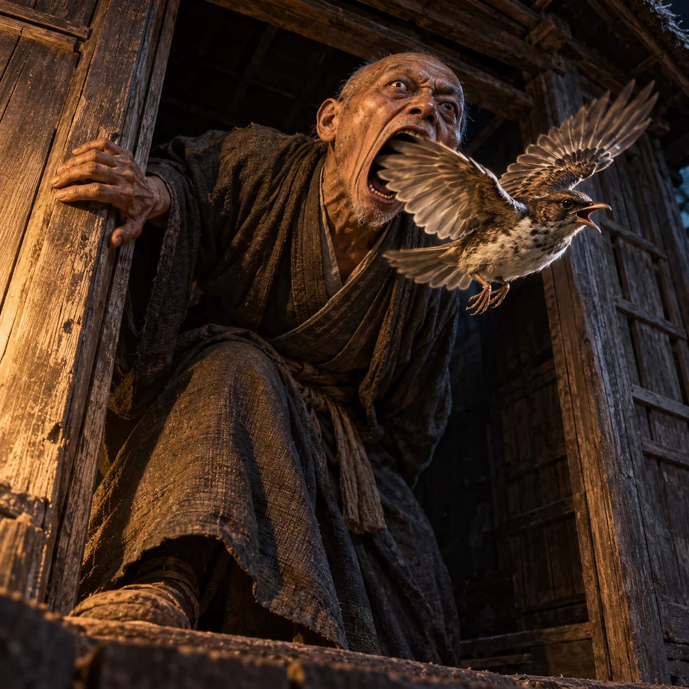
Sekien monk-like bird-expelling depiction, not severed-head or fox anecdote.
Aura: Uncanny threat comes from the monk-like yokai expelling a live bird from his mouth (kanbari-nyudo-c02).
Audit ciri dan sumber
- [object Object]
- [object Object]
- [object Object]
Native1254/200 inspected all seven checks pass. Monk-like yokai one human head/two eyes, opaque robe, left grip hand five digits; other limb portions naturally occluded. One bird physically exits mouth c02 with one head,two wings,two legs, no injury. Startling forward lean dominates old toilet doorway c01/c07, uncanny bird expulsion readable at200px. No invented magical symbols, severed head variant, gore or film design.
Review sumberONE original square premium painterly cinematic Mythics illustration of Kanbari nyūdō, the Japanese toilet yokai in Sekien monk-like bird-expelling form. Native square PNG at least 1024 by 1024 pixels.
ANATOMY: one monk-like human figure with one head/two eyes, two arms/two legs, shaved or balding scalp, fully opaque simple monk robe; one living bird emerging from open mouth, bird has one head/two wings/two legs, no blood or injury [kanbari-nyudo-c02]
MOMENT: LEAN suddenly into dark toilet doorway toward viewer while a bird bursts from his open mouth with wings already beating; one hand grabs doorpost
POWER: documented mouth-expelled bird only; no gold head, aura, magic chant glyphs or fox body mixed in [kanbari-nyudo-c02]
SCALE & CAMERA: extreme low angle; close foreshortened framing creates dominance, no invented gigantic size
LIGHT & WEATHER: single low oil-lamp light outside crop, dark toilet doorway, dusty cold air
SURFACE: aged human skin, coarse opaque robe, natural bird feathers and wooden post
SETTING: old wooden toilet doorway at year end, no fixtures or human visitor shown [kanbari-nyudo-c01, kanbari-nyudo-c07]
MOOD: imposing and awe-inspiring or menacing according to documented character; never cute, calm, tame or decorative. Being dominates and is striking at200px.
HARD CONSTRAINTS: no text, lettering, glyphs, logos, border, frame or watermark; no extra heads, eyes, limbs or fingers; no designs from films, games, anime or comics; no nudity, gore or visible wounds; no generic luminous aura, neon outline, energy ribbons or coloured magical fog. Bracketed claimIDs are instructions, never visible text.
Kao (bull)
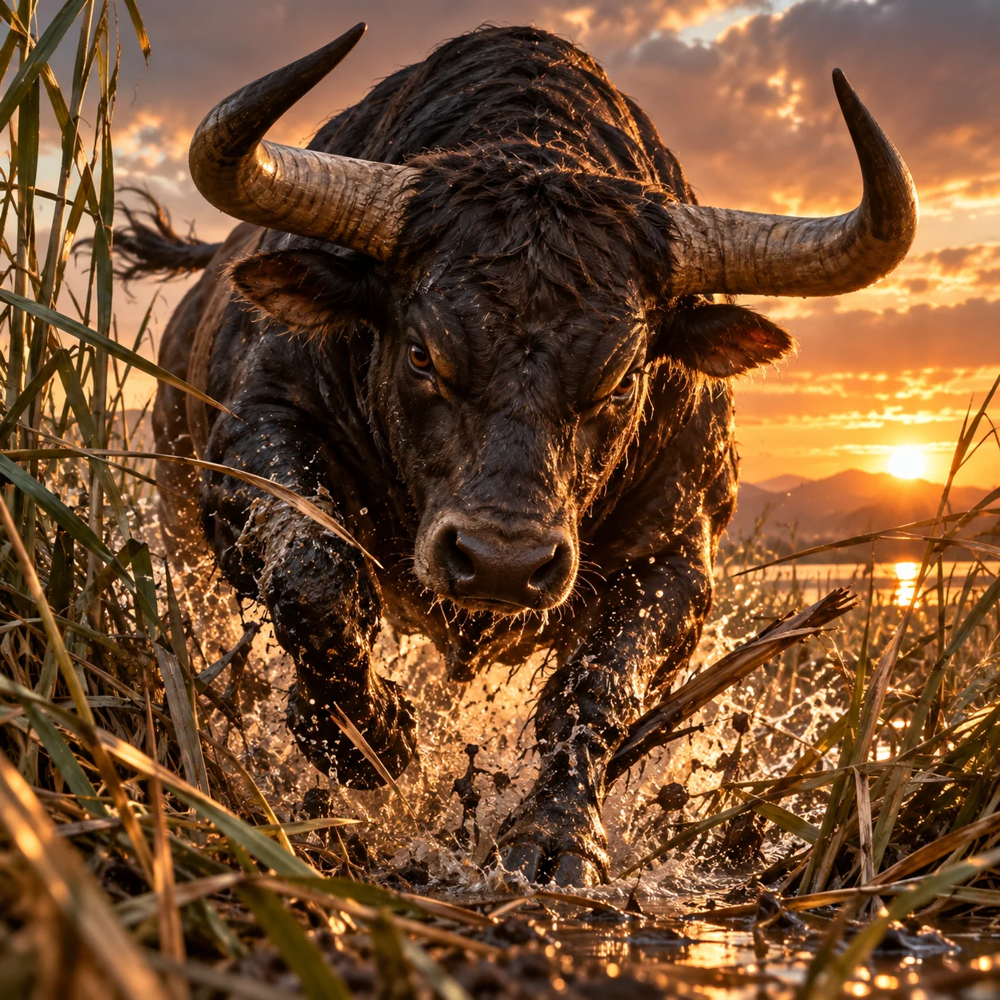
Untamed great divine bull at Waithou, before the father-name taming.
Aura: Awe comes from the great horned bull forcefully emerging at Waithou (kao-bull-c13, kao-bull-c15).
Audit ciri dan sumber
- [object Object]
- [object Object]
Native1254/200 inspected; all seven Sangar checks pass. Great bull c01/c13 charges bodily through Waithou reeds c13: one head,two eyes,two bull horns,four natural hooflegs (rear legs perspective occluded),one tail. Direct lowered horn attack and churned mud/water physically from wateredge emergence create danger c13/c15, no magical power. Divine animal treated respectfully without demon anatomy. No calm dairycow reading/text/gore/franchise cues.
Review sumberONE original square premium painterly cinematic Mythics illustration of Kao (bull), the great divine Meitei bull of the Khamba Thoibi epic before its taming. Native square PNG at least 1024 by 1024 pixels.
ANATOMY: one living great bull, one head/two eyes, two natural bull horns, four hoofed legs and one bovine tail; no wings, jewellery or invented supernatural body parts [kao-bull-c01, kao-bull-c13, kao-bull-c15]
MOMENT: BURST from water-edge reeds toward viewer with head lowered and horns thrust forward, powerful shoulders surging and reed stems bent by bodily contact
POWER: no documented magical power; imposing divine bull force conveyed by physical forward motion only, no aura [kao-bull-c13, kao-bull-c15]
SCALE & CAMERA: extreme low angle; close foreshortened framing creates dominance, no invented gigantic size
LIGHT & WEATHER: one low warm sunset shaft; deep walnut shadows and strong rim light
SURFACE: wet bovine hair, thick keratin horns, mud and snapped real reeds
SETTING: reeds bordering the waters of Waithou [kao-bull-c13]
MOOD: imposing and awe-inspiring or menacing according to documented character; never cute, calm, tame or decorative. Being dominates and is striking at200px.
HARD CONSTRAINTS: no text, lettering, glyphs, logos, border, frame or watermark; no extra heads, eyes, limbs or fingers; no designs from films, games, anime or comics; no nudity, gore or visible wounds; no generic luminous aura, neon outline, energy ribbons or coloured magical fog. Bracketed claimIDs are instructions, never visible text.
Kerakera-onna
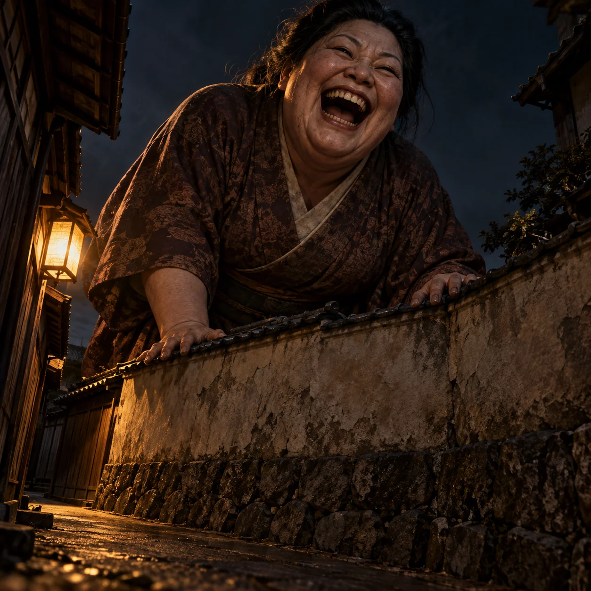
Giant kimono-clad middle-aged laughing woman; not a severed head.
Aura: Threat comes from enormous laughing woman looming over small wall and alley (kerakera-onna-c03, kerakera-onna-c04, kerakera-onna-c07).
Audit ciri dan sumber
- [object Object]
- [object Object]
- [object Object]
Native1254/200 inspected; all seven Sangar checks pass. Documented gigantic middle-aged woman c03/c08/c10 leans down over ordinary wall c04 and narrow lonely alley c11, laughing open mouthed c07. One head/two eyes,two arms and human natural teeth; opaque kimono with legs occluded behind wall, no extra features. Huge scale and looming cackle remain unsettling at200px. Two hands grip wall with perspective occlusion, no visible extra digits. No sound-energy effect/text/gore/franchise design.
Review sumberONE original square premium painterly cinematic Mythics illustration of Kerakera-onna, the giant middle-aged Japanese woman yokai laughing over a wall. Native square PNG at least 1024 by 1024 pixels.
ANATOMY: one gigantic middle-aged woman, one head/two eyes and natural human teeth; two arms/two legs with lower legs hidden behind wall; fully opaque closed kimono, no fangs, horns or invented extra features [kerakera-onna-c03, kerakera-onna-c08, kerakera-onna-c10]
MOMENT: LEAN towering over a much smaller wall directly toward viewer, open mouth in sudden wide cackle and shoulder shaking, hands planted on wall top
POWER: documented frightening laugh conveyed by mouth, posture and shaking shoulders, NO sound-energy rings or invented terrorbeam [kerakera-onna-c04, kerakera-onna-c07]
SCALE & CAMERA: extreme low alley-floor camera, documented giant woman dwarfs ordinary wall; head fills upper half
LIGHT & WEATHER: single low amber lantern light, deep alley shadows and ordinary wind
SURFACE: weathered skin, rough plain kimono, old wall plaster
SETTING: wall beside lonely street or alley [kerakera-onna-c04, kerakera-onna-c11]
MOOD: imposing and awe-inspiring or menacing according to documented character; never cute, calm, tame or decorative. Being dominates and is striking at200px.
HARD CONSTRAINTS: no text, lettering, glyphs, logos, border, frame or watermark; no extra heads, eyes, limbs or fingers; no designs from films, games, anime or comics; no nudity, gore or visible wounds; no generic luminous aura, neon outline, energy ribbons or coloured magical fog. Bracketed claimIDs are instructions, never visible text.
Khambrangchak
Menunggu gambar yang lolos audit
Kinie Ger
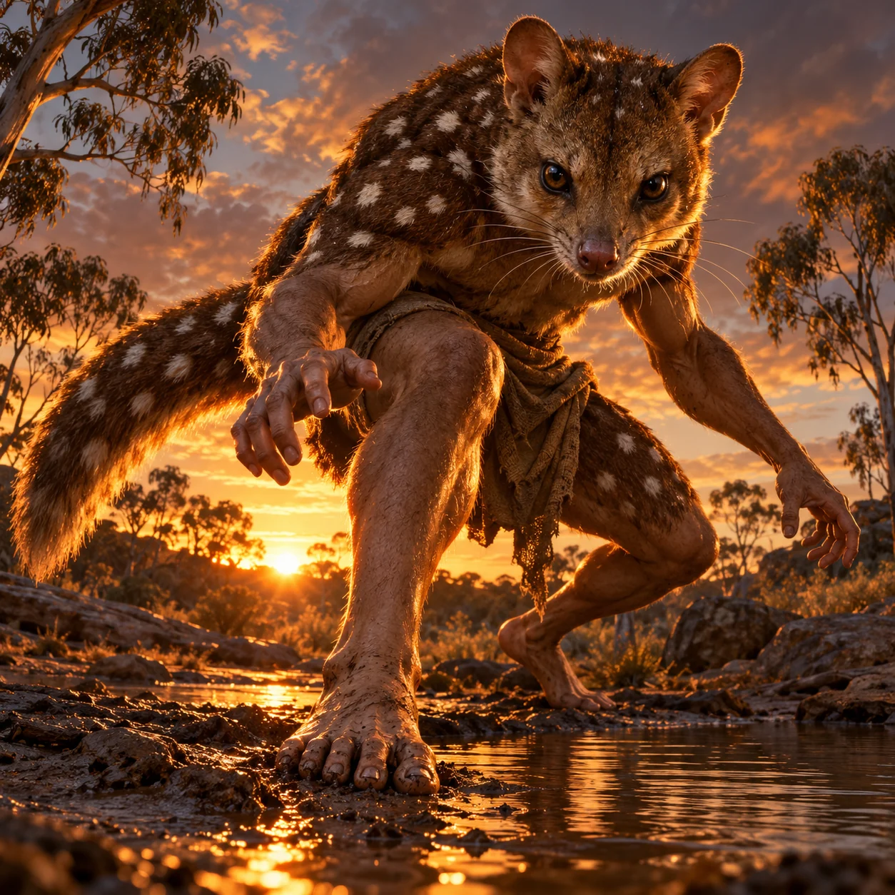
Quoll-headed/quoll-bodied hunter with human limbs before owl/crow ambush.
Aura: Threat comes from ruthless human-limbed quoll beast confronting at waterhole (kinie-ger-c01, kinie-ger-c02, kinie-ger-c03).
Audit ciri dan sumber
- [object Object]
- [object Object]
Native1254/200 inspected all seven checks pass. One quoll head/two eyes/two ears, spotted quoll torso and tail c02; exactly two human arms and two human legs, near hand five digits, near foot five toes with far foot partly occluded. Opaque waistwrap, no weapon/sacred motif invented. Uncanny hybrid pivots forward at waterhole c03, direct gaze and reaching human hands read threatening at200px without enlarging into giant. No supernatural effects, text,gore or borrowed adaptation.
Review sumberONE original square premium painterly cinematic Mythics illustration of Kinie Ger, the quoll-headed and quoll-bodied hunter with human limbs of Southeastern Australian traditional stories. Native square PNG at least 1024 by 1024 pixels.
ANATOMY: one quoll head with two eyes/rounded ears, furred quoll torso and one quoll tail; exactly TWO human arms and TWO human legs, human five-finger hands and five-toe feet; fully opaque waist wrap; no spear or weapons, no armour, motifs or extra limbs [kinie-ger-c01, kinie-ger-c02]
MOMENT: PIVOT from drinking at the waterhole to face viewer, one human hand coming upward into readiness, one human foot pushing from muddy edge
POWER: no documented supernatural power; predatory menace through human-limbed quoll anatomy, no victims shown [kinie-ger-c01, kinie-ger-c02]
SCALE & CAMERA: extreme low angle; close foreshortened framing creates dominance, no invented gigantic size
LIGHT & WEATHER: one low warm sunset shaft; deep walnut shadows and strong rim light
SURFACE: matted spotted quoll fur, human skin, rough opaque cloth, plain wood spear and mud
SETTING: waterhole where the ambush story places him [kinie-ger-c03]
MOOD: imposing and awe-inspiring or menacing according to documented character; never cute, calm, tame or decorative. Being dominates and is striking at200px.
HARD CONSTRAINTS: no text, lettering, glyphs, logos, border, frame or watermark; no extra heads, eyes, limbs or fingers; no designs from films, games, anime or comics; no nudity, gore or visible wounds; no generic luminous aura, neon outline, energy ribbons or coloured magical fog. Bracketed claimIDs are instructions, never visible text.
klu
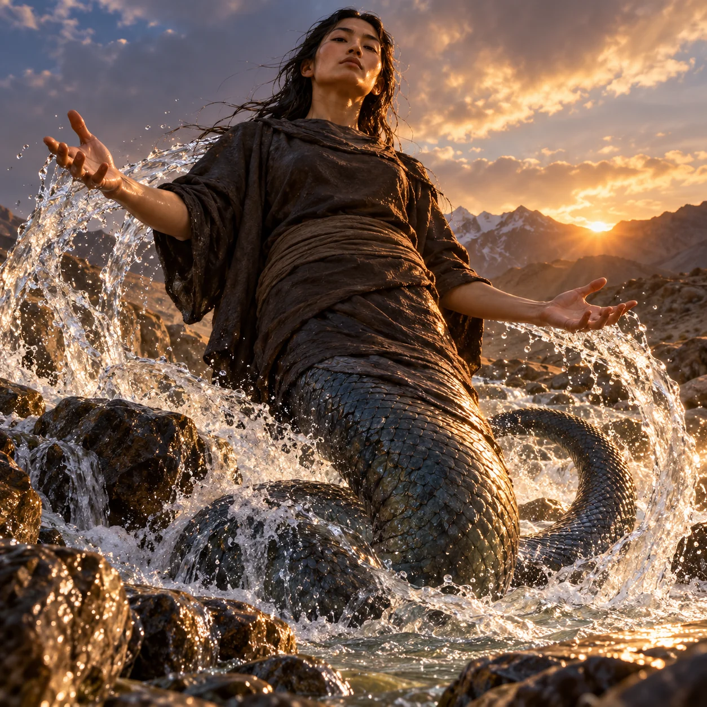
Ladakh human-torso serpent-tail naga form, not Bon animal-headed composites.
Aura: Awe comes from documented naga hybrid rising in its physically moving spring water (klu-c05, klu-c06, klu-c08).
Audit ciri dan sumber
- [object Object]
- [object Object]
- [object Object]
Native1254/200 inspected all seven checks pass. Ladakh naga variant c05: one human head/two eyes,two human arms, each hand five visible human digits, one continuous serpent lower body/tail and no legs. Plain opaque tunic/waist wrap, no jewellery after rejected first attempt. Rising water physically arches around commanding figure c06/c08 at spring c07. Reverent awe through hybrid anatomy and water authority, no disease/neon glyphs/text/gore/borrowed adaptation.
Review sumberONE original square premium painterly cinematic Mythics illustration of klu, a Ladakh lu/naga water spirit in documented human-torso serpent-tail form. Native square PNG at least 1024 by 1024 pixels.
ANATOMY: one human head with two eyes, human torso with exactly two human arms, serpent lower body and one long tail instead of legs; fully opaque dark tunic/mantle over torso and opaque wrap at waist-to-tail transition; NO legs, horns, extra heads or snake hood invented [klu-c05]
MOMENT: RISE in a slow commanding bend from spring water toward low viewer, hands held open while physical spring water arches up around the coiled lower serpent body; reverent nature spirit, not a demon
POWER: water controlled physically, clear spring water curves upward and pours back over stones under documented water authority; no neon aura or illness effect [klu-c06, klu-c08]
SCALE & CAMERA: extreme low angle; close foreshortened framing creates dominance, no invented gigantic size
LIGHT & WEATHER: one low warm sunset shaft; deep walnut shadows and strong rim light
SURFACE: natural human skin, rough opaque cloth, dark wet serpent scales and clear spring water
SETTING: natural spring in Ladakh, plain uninscribed rock and water [klu-c07]
MOOD: imposing and awe-inspiring or menacing according to documented character; never cute, calm, tame or decorative. Being dominates and is striking at200px.
HARD CONSTRAINTS: no text, lettering, glyphs, logos, border, frame or watermark; no extra heads, eyes, limbs or fingers; no designs from films, games, anime or comics; no nudity, gore or visible wounds; no generic luminous aura, neon outline, energy ribbons or coloured magical fog. Bracketed claimIDs are instructions, never visible text.
CORRECTION: NO jewellery of any kind: bare ears, bare neck covered by plain tunic, no necklace, beads, amulet, earrings, crown, patterns or symbols. Hands anatomically human with clearly five digits each, one thumb and four fingers, preferably partly turned palms to allow count. Dynamic water command and serpentine lower body remain clear; no ordinary standing portrait.
Koolakamba
Menunggu gambar yang lolos audit
Kui (Chinese mythology)
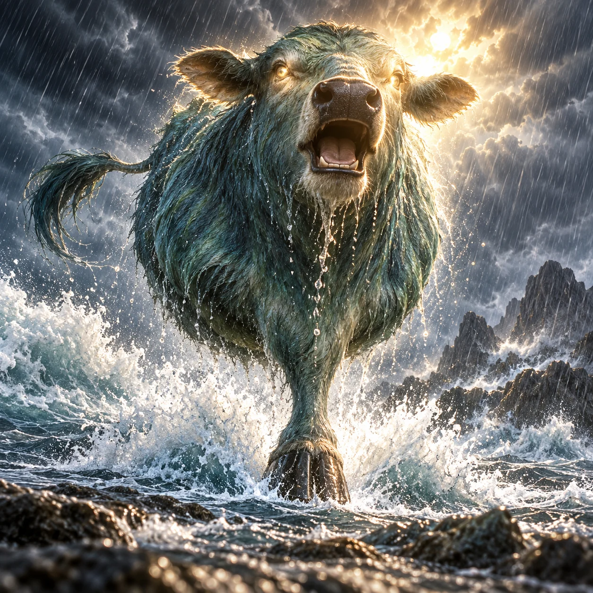
Shanhaijing hornless blue-green one-footed ox form; no musician, red drum or human-faced ape mixture.
Aura: Awe comes from single-footed hornless blue-green ox and emergence bringing wind/rain plus sun/moonlike glare (kui-chinese-mythology-c05, kui-chinese-mythology-c06).
Audit ciri dan sumber
- [object Object]
- [object Object]
- [object Object]
Native1254/200 inspected all seven Sangar checks pass. ExactlyONEcentral leg ending one hoof, hornless ox head/two eyes/two ears and bluegreen body c05; tail behind, no hidden limb trunks. Ox mouth has no upper predator fangs after rejection01; lower flat bovine teeth/pad. Wind and rain accompany emergence with sun/moonlike glare and thunder-voice open muzzle c06, no lightning bolt invented. Water/mountain setting c05, dynamic forward emergence and uncanny anatomy readable200. No text,gore,franchise cues.
Review sumberONE original square premium painterly cinematic Mythics illustration of Kui (Chinese mythology), Kui of the Liubo mountain Shanhaijing oxlike one-footed account. Native square PNG at least 1024 by 1024 pixels.
ANATOMY: one OX head with two eyes/two natural ox ears and absolutely NO HORNS; blue-green oxlike body, exactly ONE single central leg ending in ONE hoof beneath belly; all sides shown so no hidden legs exist; NO other legs, arms, wings or human face; one ox tail [kui-chinese-mythology-c05]
MOMENT: BOUND out of water toward viewer balanced on its ONE central hoof, all body limbs fully readable against spray, head held forward with radiant gaze
POWER: its emergence brings WIND AND RAIN; rain driven across real spray and watersurface. Glare like sun and moon lights wet rain from the face, not generic body aura; voice thunder suggested by open ox muzzle, NO lightning beam or bolt invented [kui-chinese-mythology-c06]
SCALE & CAMERA: extreme low shoreline camera, close whole body visibly containing exactly one central leg, no cropped/hidden legs
LIGHT & WEATHER: documented face glare is dominant warm pale light, rain rim-lit against deep sea-storm shadows
SURFACE: wet blue-green ox hair, single keratin hoof, heavy rain and sea spray
SETTING: waters at Liubo mountain in East Sea, rock outline behind subordinate [kui-chinese-mythology-c05]
MOOD: imposing and awe-inspiring or menacing according to documented character; never cute, calm, tame or decorative. Being dominates and is striking at200px.
HARD CONSTRAINTS: no text, lettering, glyphs, logos, border, frame or watermark; no extra heads, eyes, limbs or fingers; no designs from films, games, anime or comics; no nudity, gore or visible wounds; no generic luminous aura, neon outline, energy ribbons or coloured magical fog. Bracketed claimIDs are instructions, never visible text.
CORRECTION: Mouth may roar but must have natural bovine dental pad on upper front, NO upper incisors/canines/fangs and NO pointed predator teeth. Only small flat LOWER bovine incisors if any teeth visible. Keep exactlyONEcentral leg/hoof and no horns; preserve wind/rain and documented radiant glare.
Långben Rese
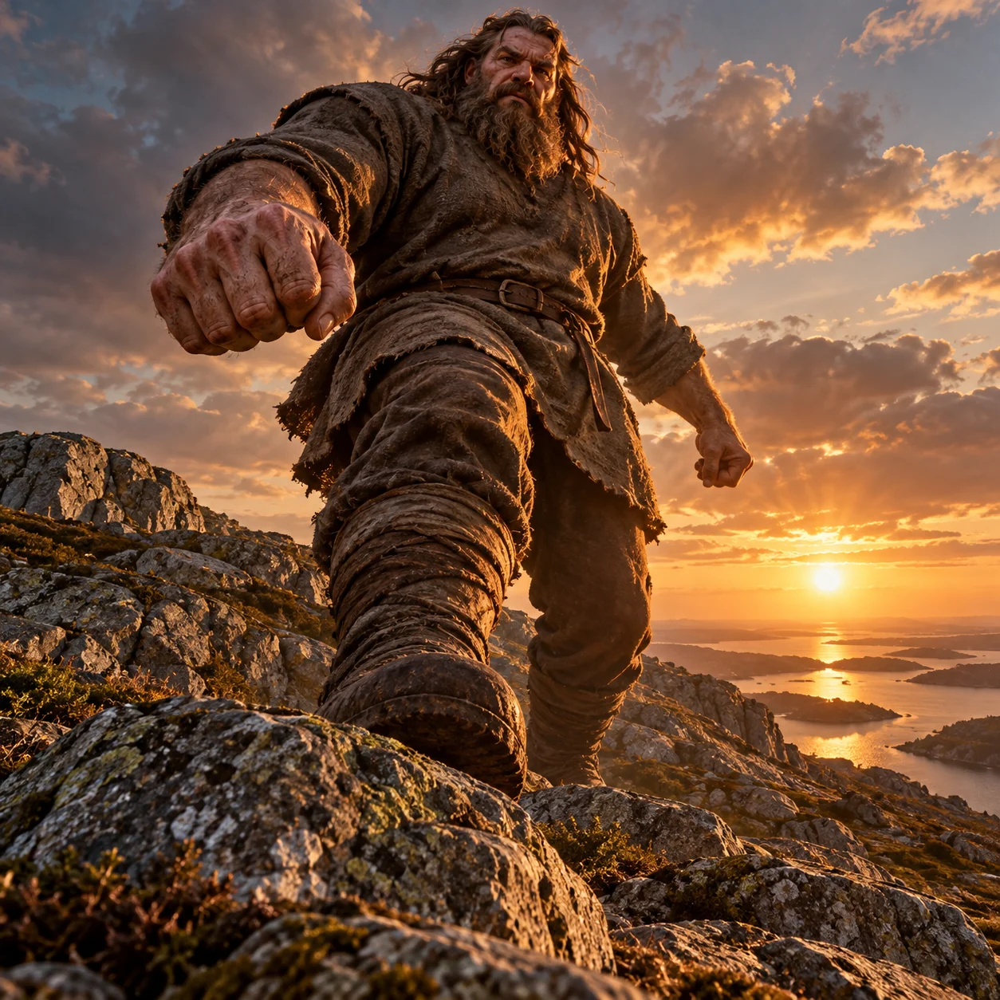
Living intact giant before duel, not the subsequent headless run.
Aura: Threat comes from a giant striding down into a confrontational duel moment (langben-rese-c01, langben-rese-c03).
Audit ciri dan sumber
- [object Object]
- [object Object]
Native1254/200 inspected all seven checks pass. Intact Nordic giant c01 before duel c03, one human head/two eyes,two arms/two legs in opaque tunic/trousers. Near closed fist four curled fingers and thumb, no weapons or invented horns. Strides down into confrontational camera from documented Skottfjallet/Bohuslan c02; giant scale suggested by low hills/rocks and towering figure, not by supernatural aura. Dynamic foreshortened fist/stride menacing200, no gore/text/borrowed franchise design.
Review sumberONE original square premium painterly cinematic Mythics illustration of Långben Rese, the Nordic ballad giant at Skottfjället before the duel with Vidrik. Native square PNG at least 1024 by 1024 pixels.
ANATOMY: one living human-shaped giant, one head/two eyes, exactly two arms/two legs; fully opaque heavy tunic and trousers, no horns, fangs or invented magical attributes [langben-rese-c01, langben-rese-c03]
MOMENT: STRIDE down toward the viewer from mountain rocks, one huge empty fist thrust forward in challenge and other arm braced behind; intact before the duel, no beheading scene
POWER: no documented supernatural power; intimidating giant motion and size only [langben-rese-c01, langben-rese-c03]
SCALE & CAMERA: extreme low mountain-foot camera, documented giant towers over smaller rocks, full torso and charging legs visible
LIGHT & WEATHER: one low warm sunset shaft; deep walnut shadows and strong rim light
SURFACE: weathered human skin, coarse dark opaque cloth and rock dust
SETTING: Skottfjället near Brattön in Bohuslän, rough mountain rocks [langben-rese-c02]
MOOD: imposing and awe-inspiring or menacing according to documented character; never cute, calm, tame or decorative. Being dominates and is striking at200px.
HARD CONSTRAINTS: no text, lettering, glyphs, logos, border, frame or watermark; no extra heads, eyes, limbs or fingers; no designs from films, games, anime or comics; no nudity, gore or visible wounds; no generic luminous aura, neon outline, energy ribbons or coloured magical fog. Bracketed claimIDs are instructions, never visible text.
Luduan
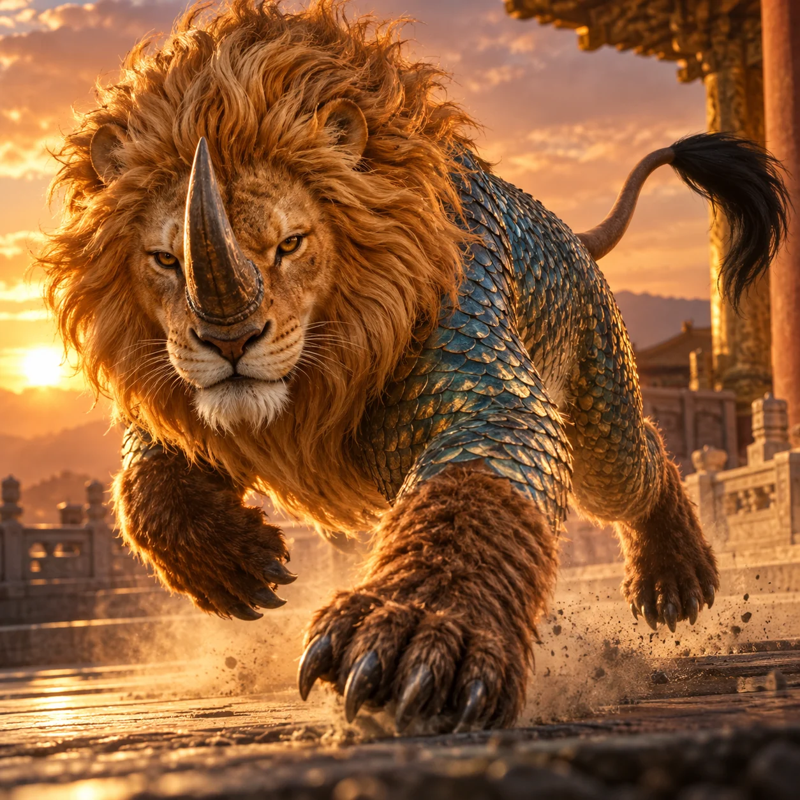
Composite lion/rhino/dragon/bear/fish/ox form from c01/c02; not conflated with Jiaoduan one-horned green deer.
Aura: Awe comes from unmistakable composite anatomy and very swift movement (luduan-c01, luduan-c02, luduan-c03).
Audit ciri dan sumber
- [object Object]
- [object Object]
- [object Object]
- [object Object]
Native1254/200 inspected all seven checks pass. One lion head/two eyes and one clearly nasal rhino horn c01; fish-scaled dragonlike torso with four bear limbs (far hind naturally hidden), near bear paw five claws and proper smooth slender ox tail/hairtuft c02. First dragonspined tail rejected, corrected02 plain ox tail. Bounding physical speed c03 kicks ordinary dust in subordinate imperial setting c04/c07. Focused auspicious presence, not evil or decorative statue; composite remains clear200. No text/neon/gore/franchise design.
Review sumberONE original square premium painterly cinematic Mythics illustration of Luduan, the auspicious lion-headed composite Luduan, not the similar Jiaoduan deer account. Native square PNG at least 1024 by 1024 pixels.
ANATOMY: one LION head with two eyes, exactly ONE RHINO horn on nose; dragonlike long scaled body, exactly four BEAR paws with bear claws, wet overlapping FISH scales; one OX tail with terminal hair tuft. No antlers, deer head, horse tail, wings, extra horns or extra heads [luduan-c01, luduan-c02]
MOMENT: SWEEP forward in a bounding stride toward viewer, lion head lowered commandingly and bear forepaws reaching; powerful auspicious presence, not evil monster
POWER: documented swift travel conveyed through physical bounding movement and ordinary dust, no energy trails or language glyphs [luduan-c03]
SCALE & CAMERA: extreme low angle; close foreshortened framing creates dominance, no invented gigantic size
LIGHT & WEATHER: one low warm sunset shaft; deep walnut shadows and strong rim light
SURFACE: rough lion fur, rhino keratin, overlapping fish scales, bear fur paws and ox-tail tuft
SETTING: near an enlightened ruler throne setting, plain blurred architectural edge only, drawn from auspicious imperial association; no text or people [luduan-c04, luduan-c07]
MOOD: imposing and awe-inspiring or menacing according to documented character; never cute, calm, tame or decorative. Being dominates and is striking at200px.
HARD CONSTRAINTS: no text, lettering, glyphs, logos, border, frame or watermark; no extra heads, eyes, limbs or fingers; no designs from films, games, anime or comics; no nudity, gore or visible wounds; no generic luminous aura, neon outline, energy ribbons or coloured magical fog. Bracketed claimIDs are instructions, never visible text.
CORRECTION: Replace entire tail with a slender natural OXTAIL: smooth short-haired skin along thin cordlike length ending in a black bovine hair tuft. AbsolutelyNOscales/spikes/plates/fins on tail; distinct boundary where scaled dragon torso ends and smooth bovine tail begins. Keep lionhead,one rhino horn,fishscale torso,fourbearpaws. No added spikes on body either. This is swift auspicious creature with focused dignified face, not snarling evil dragon.
Maushop
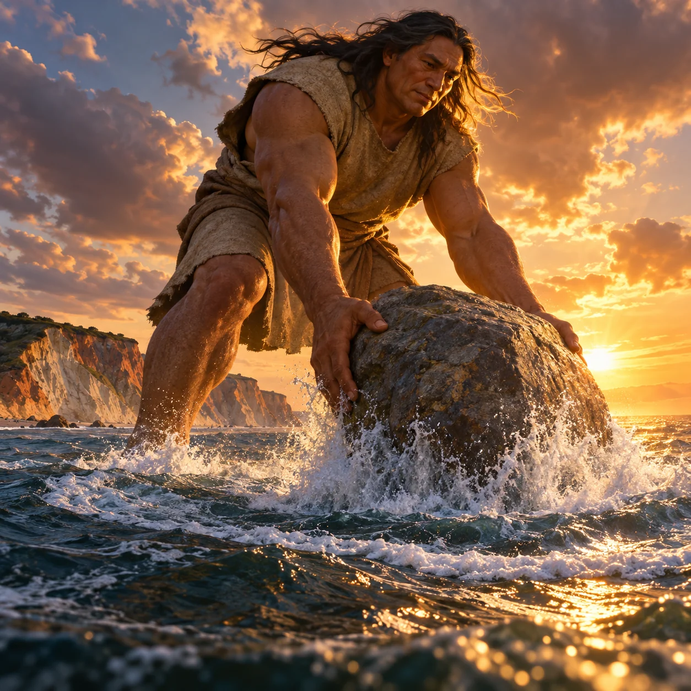
Benevolent Aquinnah giant making ocean stepping stones, no whale-killing episode or demonic redesign.
Aura: Reverent awe comes from benevolent giant forming ocean stepping stones with boulders (maushop-c04, maushop-c08).
Audit ciri dan sumber
- [object Object]
- [object Object]
- [object Object]
Native1254/200 inspected all seven Sangar checks pass. Benevolent giant c01/c08 looms above Aquinnah cliffs and ocean c02/c10; one head/two eyes,two arms/two legs with lower legs in water, opaque plain tunic/wrap, no invented headdress/tattoos. Hands grasp boulder, natural five-digit near hand with farther fingers partly rock-occluded. Boulder making stepping stone c04 physically displaces ocean water, no magical aura or harming victims. Massive working moment and cliffs make reverent awe readable200. No text/gore/franchise cues.
Review sumberONE original square premium painterly cinematic Mythics illustration of Maushop, Moshup, the benevolent Wampanoag giant provider at Aquinnah. Native square PNG at least 1024 by 1024 pixels.
ANATOMY: one intact human giant, one head/two eyes, two arms/two legs; fully opaque plain rough tunic and knee-length wrapped garment covers torso and pelvis; no invented headdress, feathers, warpaint, tattoos or ritual symbols [maushop-c01, maushop-c08]
MOMENT: LOWER a huge boulder from both hands into the ocean ahead of himself to make a stepping stone, body bending protectively toward shore, benevolent provider rather than destructive fighter
POWER: documented immense boulder-placement makes stepping stones, physically driving a circle of displaced seawater around boulder; no magical energy or gore [maushop-c04]
SCALE & CAMERA: extreme low shore camera looking up, giant dominates, smaller AquinnahCliffs and ocean give documented scale
LIGHT & WEATHER: one golden sunset shaft silhouettes giant and illuminates water splash; deep walnut cliff shadows
SURFACE: weathered human skin, coarse opaque cloth, giant boulder stone and ocean spray
SETTING: Aquinnah Cliffs Martha Vineyard and ocean below, cliffs small alongside documented giant [maushop-c02, maushop-c10, maushop-c12]
MOOD: imposing and awe-inspiring or menacing according to documented character; never cute, calm, tame or decorative. Being dominates and is striking at200px.
HARD CONSTRAINTS: no text, lettering, glyphs, logos, border, frame or watermark; no extra heads, eyes, limbs or fingers; no designs from films, games, anime or comics; no nudity, gore or visible wounds; no generic luminous aura, neon outline, energy ribbons or coloured magical fog. Bracketed claimIDs are instructions, never visible text.
Mikoshi-nyūdō
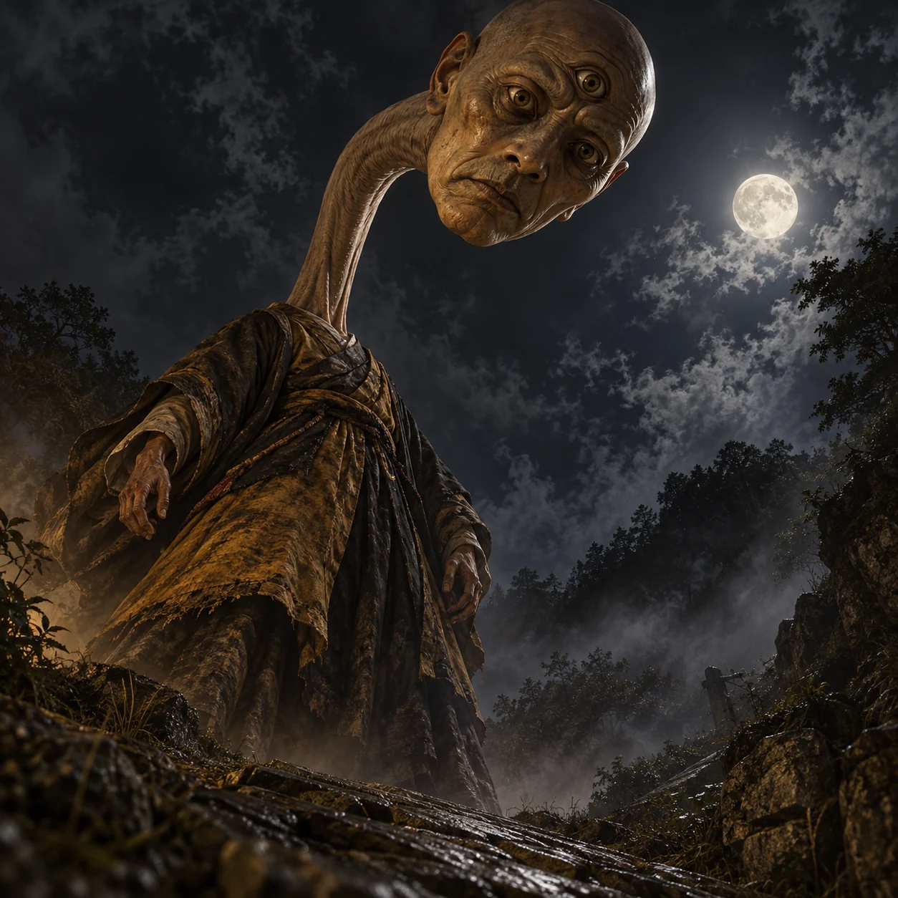
Late-Edo long thin neck and three-eyed face variant, without iron-rod details from another depiction.
Aura: Bend the long thin neck downward while growing upward over the viewer, all three eyes confronting camera. Visual grounding: mikoshi-nyudo-c01, mikoshi-nyudo-c10, mikoshi-nyudo-c03.
Audit ciri dan sumber
- [object Object]
- [object Object]
- [object Object]
Native and200px inspected: one bald head with exactly3eyes, long thin neck bending over camera above a robed torso,2arms and no ironrod. Night hillroad and mist sourcec03; gaze and neck-extension moment dominate thumbnail. No glow, fangs, text or extra anatomy. Seven Sangar checks pass.
Review sumberONE original square premium painterly cinematic Mythics illustration of Mikoshi-nyudo, a towering long-necked yokai of Japanese late-Edo tales. Native square PNG at least1024 by1024 pixels.
ANATOMY: One bald monk-like humanoid head with EXACTLY THREE clearly separated open eyes, two ordinary eyes and one forehead eye; a very long thin extending neck, two arms and two legs in fully opaque worn robes. No iron rod, horns or fangs. [mikoshi-nyudo-c01, mikoshi-nyudo-c10]
MOMENT: Bend the long thin neck downward while growing upward over the viewer, all three eyes confronting camera.
POWER: Its documented neck extension and growth make the robed torso far below the looming head, with the neck visibly stretching upward; no other powers or glow. [mikoshi-nyudo-c03, mikoshi-nyudo-c10]
SCALE & CAMERA: extreme low angle, documented colossal being fills the frame with tiny sea or land references; distinguishing anatomy readable at200px.
LIGHT & WEATHER: Single low moon source on the bald head and robe, natural night mist.
SURFACE: tactile organic fur, skin, feather, scales, wet wood or opaque cloth corresponding to the documented subject, never plastic.
SETTING: A night hill road. [mikoshi-nyudo-c03]
MOOD: menacing, dangerous and imposing; never cute, calm, static or decorative. Dark walnut, antique-gold and parchment palette with one strong accent.
HARD CONSTRAINTS: no text, glyph, lettering, logo, border, frame or watermark; no extra heads, eyes, arms, legs, fingers or attributes; no film, game, anime or comic adaptation; no nudity or explicit gore; no generic glow aura, neon outline, floating runes or energy ribbons. Anatomical counts in this prompt override generic creature associations.
Mino-waraji
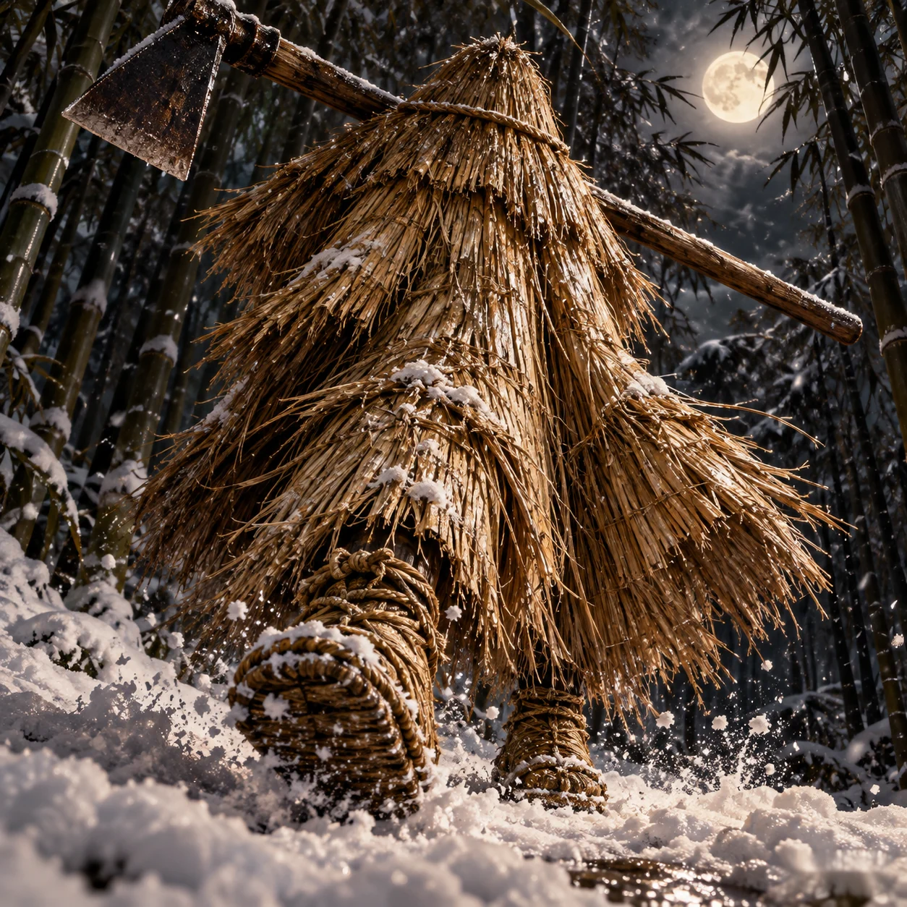
Sekien straw-raincoat body, two sandal legs and carried hoe; no sandal-face or horse-headed-staff variant.
Aura: Stride out of snowy bamboo toward the viewer, the empty straw body twisting forward and the hoe shifting diagonally across the frame. Visual grounding: mino-waraji-c02.
Audit ciri dan sumber
- [object Object]
- [object Object]
- [object Object]
Native and200px inspected: animate empty straw-raincoat body with exactly2woven sandal feet and one shoulder-carried hoe moves through snowy bamboo. No human inside, face or eyes added. Raised front sandal, twisting straw and kicked snow provide active uncanny presence at200px while harmless character retained. Seven checks pass.
Review sumberONE original square premium painterly cinematic Mythics illustration of Mino-waraji, the animate straw raincoat and sandal yokai recorded by Sekien. Native square PNG at least1024 by1024 pixels.
ANATOMY: An upright STRAW RAINCOAT is the entire body, exactly TWO straw sandals are its legs/feet, and it carries one wooden-handled iron hoe across its shoulder. No human body inside, no human face, no added eyeballs or straw-sandal head; flexible straw bundles support the hoe. [mino-waraji-c02]
MOMENT: Stride out of snowy bamboo toward the viewer, the empty straw body twisting forward and the hoe shifting diagonally across the frame.
POWER: No documented active magical effect; snow is kicked up by the two moving sandals and straw sways physically. [mino-waraji-c02]
SCALE & CAMERA: extremely close low camera and foreshortening, no invented giant size, no tiny people as size references; distinguishing anatomy readable at200px.
LIGHT & WEATHER: One low moon source on wet straw and snow, dark bamboo silhouettes.
SURFACE: tactile organic fur, skin, feather, scales, wet wood or opaque cloth corresponding to the documented subject, never plastic.
SETTING: Snow-covered bamboo grove, as in the source depiction. [mino-waraji-c02]
MOOD: uncanny awe-inspiring, grumpy but harmless presence; never cute, calm, static or decorative. Dark walnut, antique-gold and parchment palette with one strong accent.
HARD CONSTRAINTS: no text, glyph, lettering, logo, border, frame or watermark; no extra heads, eyes, arms, legs, fingers or attributes; no film, game, anime or comic adaptation; no nudity or explicit gore; no generic glow aura, neon outline, floating runes or energy ribbons. Anatomical counts in this prompt override generic creature associations.
Mintuci
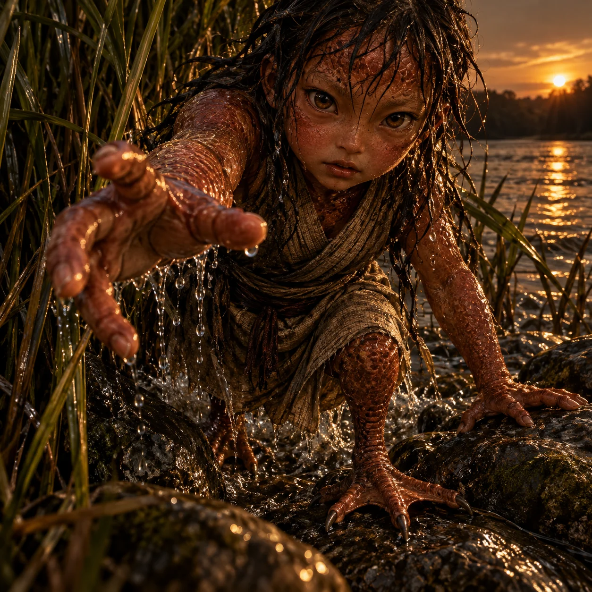
Reddish turtle-textured, bird-footed aquatic variant; no borrowed kappa anatomy.
Aura: Rise through river reeds into close confrontation, one hand reaching toward the viewer while bird feet brace on wet stone. Visual grounding: mintuci-c02, mintuci-c08, mintuci-c09, mintuci-c07.
Audit ciri dan sumber
- [object Object]
- [object Object]
- [object Object]
Native and200px inspected: child-stature half-human form with reddish turtle-textured skin, one head and2ordinary eyes,2arms and2bird-footed legs. One scaled bird foot prominent while other partly submerged. Opaque wraps, reaching hand, fixed gaze and wet emerging motion create formidable uncanny spirit presence; no kappa dish, shell or beak. Seven checks pass, no invented power or gore.
Review sumberONE original square premium painterly cinematic Mythics illustration of Mintuci, a small Ainu aquatic half-human half-beast spirit. Native square PNG at least1024 by1024 pixels.
ANATOMY: One half-human half-beast figure at human-child stature, one head with two ordinary eyes, two arms and two bird-footed legs; reddish skin with sea-turtle-like texture. Fully opaque simple wrapped clothing covers torso and intimate anatomy. No shell, beak, head water-dish, hoof sets or extra limbs. [mintuci-c02, mintuci-c08, mintuci-c09]
MOMENT: Rise through river reeds into close confrontation, one hand reaching toward the viewer while bird feet brace on wet stone.
POWER: Physical river water streams off the emerging body; no invented beams, controlled storm or magic aura. The threatening approach evokes the documented underwater dragging, without a victim. [mintuci-c07]
SCALE & CAMERA: extremely close low camera and foreshortening, no invented giant size, no tiny people as size references; distinguishing anatomy readable at200px.
LIGHT & WEATHER: Single warm low sunset shaft across textured reddish skin and real water droplets.
SURFACE: tactile organic fur, skin, feather, scales, wet wood or opaque cloth corresponding to the documented subject, never plastic.
SETTING: A dark river margin. [mintuci-c05]
MOOD: reverent but formidable spirit presence; never cute, calm, static or decorative. Dark walnut, antique-gold and parchment palette with one strong accent.
HARD CONSTRAINTS: no text, glyph, lettering, logo, border, frame or watermark; no extra heads, eyes, arms, legs, fingers or attributes; no film, game, anime or comic adaptation; no nudity or explicit gore; no generic glow aura, neon outline, floating runes or energy ribbons. Anatomical counts in this prompt override generic creature associations.
Mo (Chinese zoology)
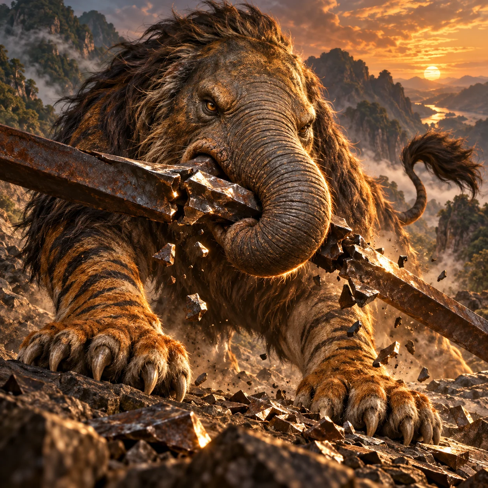
Bai Juyi elephant-trunk, rhinoceros-eye, cow-tail and tiger-paw chimera, not panda/tapir or Japanese baku.
Aura: Pull an iron bar into its mouth with its trunk and brace tiger paws toward the viewer. Visual grounding: mo-chinese-zoology-c07, mo-chinese-zoology-c08.
Audit ciri dan sumber
- [object Object]
- [object Object]
- [object Object]
Native and200px inspected: one composite head has elephant trunk and2rhino-like eyes, no horn or tusks; striped tiger forepaws and4-legged body with rear paws occluded, single tufted cow tail visible. Trunk curls iron into biting mouth while physical metal fragments fall. Southern mountain valley frames protective imposing creature at200px. No dream power, glow or text. Seven checks pass.
Review sumberONE original square premium painterly cinematic Mythics illustration of Mo, the composite metal-eating protective beast described by Bai Juyi. Native square PNG at least1024 by1024 pixels.
ANATOMY: One composite quadruped with one head bearing an elephant trunk and exactly two rhinoceros-like eyes, FOUR tiger paws and one cow tail with a tuft. No rhinoceros horn, elephant tusks, extra heads or panda form. [mo-chinese-zoology-c07]
MOMENT: Pull an iron bar into its mouth with its trunk and brace tiger paws toward the viewer.
POWER: Physically bite and bend iron and copper implements, the documented diet; no dream-eating or invented spell. [mo-chinese-zoology-c08]
SCALE & CAMERA: extremely close low camera and foreshortening, no invented giant size, no tiny people as size references; distinguishing anatomy readable at200px.
LIGHT & WEATHER: Single dying sun source rim-lighting trunk, tiger paws and metal fragments; natural ground dust.
SURFACE: tactile organic fur, skin, feather, scales, wet wood or opaque cloth corresponding to the documented subject, never plastic.
SETTING: Mountain valleys of the south named by Bai Juyi. [mo-chinese-zoology-c07]
MOOD: protective and awe-inspiring; never cute, calm, static or decorative. Dark walnut, antique-gold and parchment palette with one strong accent.
HARD CONSTRAINTS: no text, glyph, lettering, logo, border, frame or watermark; no extra heads, eyes, arms, legs, fingers or attributes; no film, game, anime or comic adaptation; no nudity or explicit gore; no generic glow aura, neon outline, floating runes or energy ribbons. Anatomical counts in this prompt override generic creature associations.
Moon rabbit
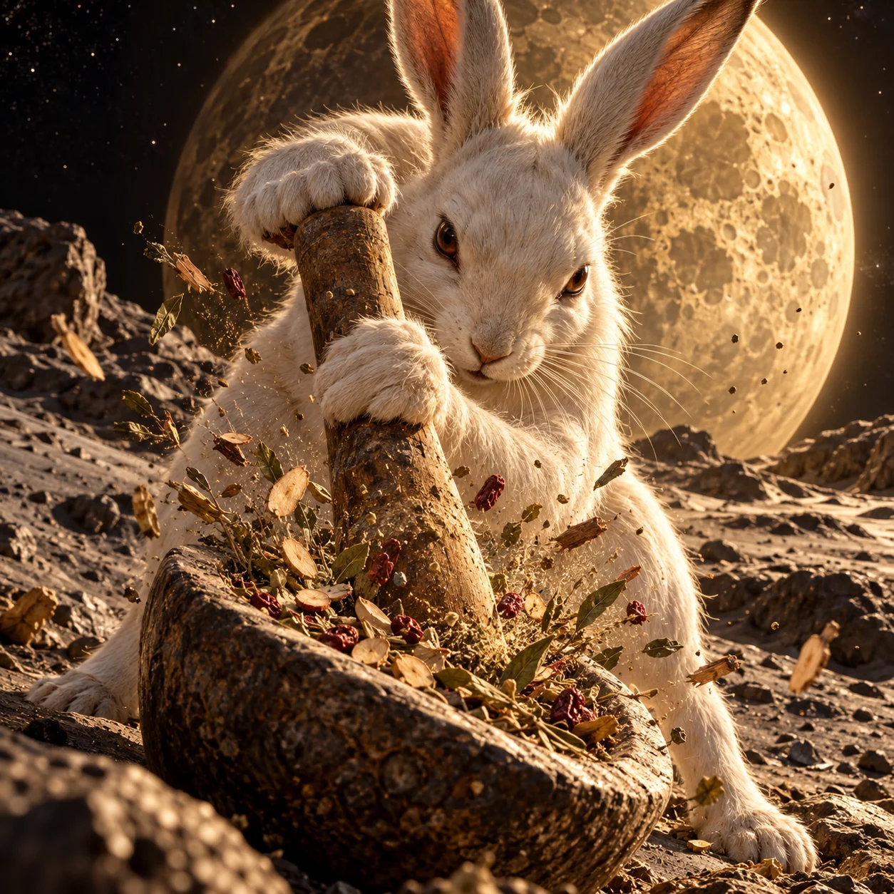
Chinese white lunar hare pounding herbs for immortals; no mochi, sacrificial fire or other traditions merged.
Aura: Drive the pestle down into the mortar toward camera, ears upright and eyes intensely focused, fur and crushed herbs lifted by the motion. Visual grounding: moon-rabbit-c01, moon-rabbit-c06, moon-rabbit-c20.
Audit ciri dan sumber
- [object Object]
- [object Object]
- [object Object]
PNG native1254 and thumbnail200 inspected. Dominant white hare has one head,two eyes,two ears,four paws; forceful herb-pounding c01/c06 produces physical fragments. Focused frontal gaze and extreme low camera create reverent ritual awe rather than ordinary grazing animal. No unsupported power,text,nudity or extra anatomy; all7 Sangar checks pass.
Review sumberONE original square premium painterly cinematic Mythics illustration of Moon Rabbit, the white hare of Chinese lunar herb-pounding tradition. Native square PNG at least1024 by1024 pixels.
ANATOMY: One WHITE hare with one head, two natural eyes, two long hare ears, four hare limbs and a short tail; it grips one pestle over one mortar full of herbs. No clothes, humanoid hands, horns, giant size or aggressive fangs. [moon-rabbit-c01, moon-rabbit-c06, moon-rabbit-c20]
MOMENT: Drive the pestle down into the mortar toward camera, ears upright and eyes intensely focused, fur and crushed herbs lifted by the motion.
POWER: Real herbal fragments scatter from the documented pounding for immortals, no invented healing rays or glowing elixir. [moon-rabbit-c06]
SCALE & CAMERA: extremely close low camera and foreshortening, no invented giant size, no tiny people as size references; distinguishing anatomy readable at200px.
LIGHT & WEATHER: A single warm grazing sunlight source across dark lunar ground and white fur, tiny natural herbal dust.
SURFACE: tactile organic fur, skin, feather, scales, wet wood or opaque cloth corresponding to the documented subject, never plastic.
SETTING: The Moon where the hare pounds herbs. [moon-rabbit-c06]
MOOD: reverent, overwhelming ritual awe; benevolent rather than hostile; never cute, calm, static or decorative. Dark walnut, antique-gold and parchment palette with one strong accent.
HARD CONSTRAINTS: no text, glyph, lettering, logo, border, frame or watermark; no extra heads, eyes, arms, legs, fingers or attributes; no film, game, anime or comic adaptation; no nudity or explicit gore; no generic glow aura, neon outline, floating runes or energy ribbons. Anatomical counts in this prompt override generic creature associations.
Nie Xiaoqian
Menunggu gambar yang lolos audit
Nuppeppō
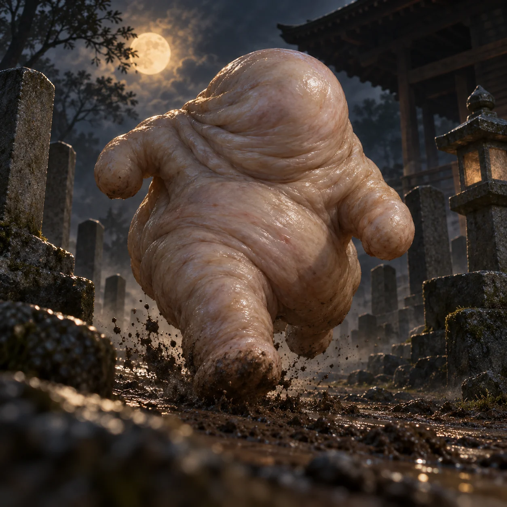
Child-sized intact flabby blob with indistinct face and fingerless undeveloped hands.
Aura: Run past the viewer between old grave stones, rounded body leaning into motion and lumpy feet disturbing damp earth. Visual grounding: nuppeppo-c02, nuppeppo-c07, nuppeppo-c12, nuppeppo-c06, nuppeppo-c09.
Audit ciri dan sumber
- [object Object]
- [object Object]
- [object Object]
Native1254 and200px inspected: one wrinkle-blended faceless head, two undeveloped arms and feet without digits c02/c07/c12. Running c09 physically displaces mud; nocturnal graveyard c05/c06 and close low angle make uncanny flesh blob dominate. Unmarked background, no unsupported power or gore. All7 Sangar checks pass.
Review sumberONE original square premium painterly cinematic Mythics illustration of Nuppeppo, the child-sized flabby yokai of old Japanese ghost scrolls. Native square PNG at least1024 by1024 pixels.
ANATOMY: One closed rounded flabby flesh-colored organic blob, one head merges into the body through indistinguishable wrinkles; two undeveloped lumpy arms and two undeveloped lumpy feet, NO fingers and no distinct eyes, nose or teeth. Entire skin is intact, without organs, wounds, genitals or anatomical nudity. [nuppeppo-c02, nuppeppo-c07, nuppeppo-c12]
MOMENT: Run past the viewer between old grave stones, rounded body leaning into motion and lumpy feet disturbing damp earth.
POWER: No supernatural attack or harmful power; physical mud and dust move from the documented running, with no colored odor cloud. [nuppeppo-c06, nuppeppo-c09]
SCALE & CAMERA: extremely close low camera and foreshortening, no invented giant size, no tiny people as size references; distinguishing anatomy readable at200px.
LIGHT & WEATHER: One low moon source on wrinkled closed skin and damp stone, natural ground fog.
SURFACE: tactile organic fur, skin, feather, scales, wet wood or opaque cloth corresponding to the documented subject, never plastic.
SETTING: An old temple graveyard at night. [nuppeppo-c05, nuppeppo-c06]
MOOD: uncanny and imposing through close framing, harmless rather than evil; never cute, calm, static or decorative. Dark walnut, antique-gold and parchment palette with one strong accent.
HARD CONSTRAINTS: no text, glyph, lettering, logo, border, frame or watermark; no extra heads, eyes, arms, legs, fingers or attributes; no film, game, anime or comic adaptation; no nudity or explicit gore; no generic glow aura, neon outline, floating runes or energy ribbons. Anatomical counts in this prompt override generic creature associations.
TARGETED CORRECTION: Make ALL grave stones, temple wood and stone lanterns completely plain, unmarked, with absolutely no carvings, symbols, glyphs, inscriptions or text. Preserve one wrinkle-blended faceless head, two stump arms, two stump feet and running physical mud motion.
Nyami Nyami
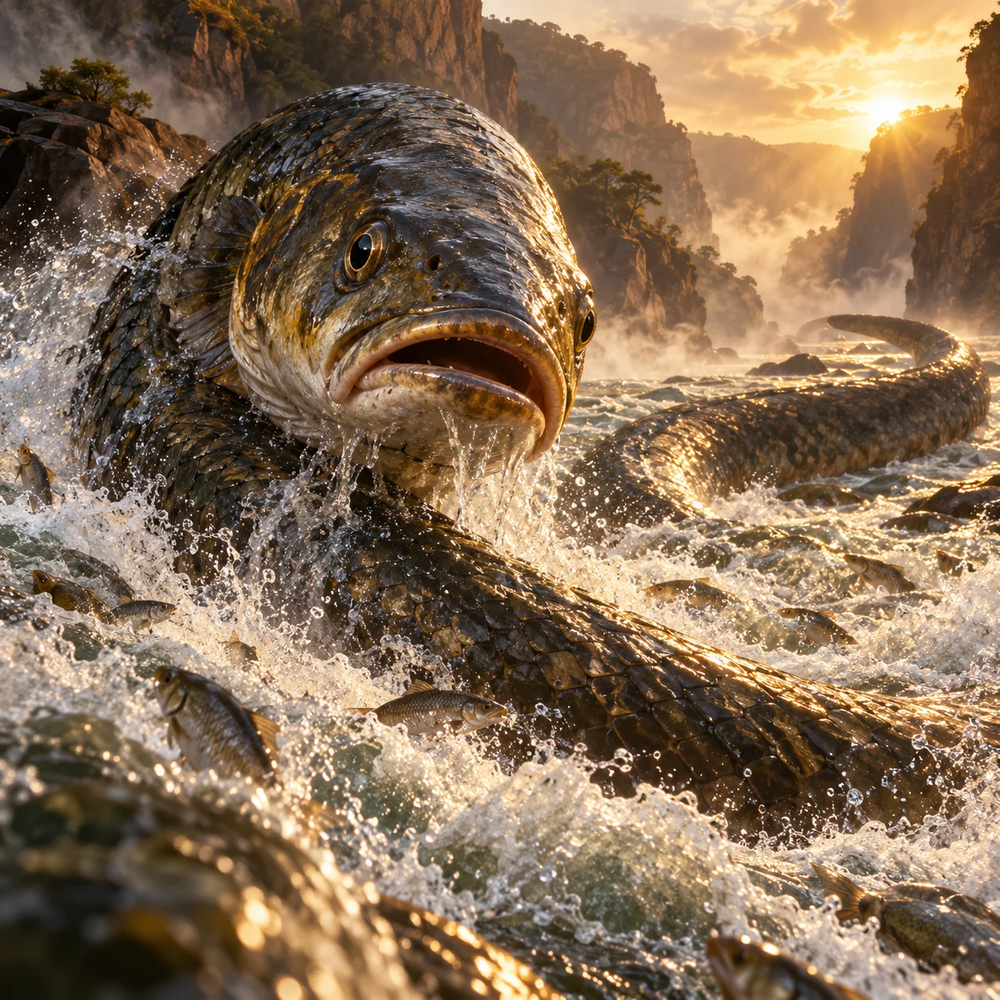
Protective fish-headed snake river god; no monstrous teeth or supernatural organs.
Aura: Rise and turn from the Zambezi water toward the viewer, the fish head filling the foreground above a sweeping snake coil. Visual grounding: nyami-nyami-c02, nyami-nyami-c03, nyami-nyami-c14.
Audit ciri dan sumber
- [object Object]
- [object Object]
- [object Object]
Native1254 and200px inspected. One fish head,two natural eyes and one snake body with singletail, no horns orlimbs c02. Surging riverwater and abundantfish c03/c14 surround moving coil in KaribaGorge c04/c07. Close low camera makes revered god dominate without hostile additions. No text,glow,gore. All7 Sangar checks pass.
Review sumberONE original square premium painterly cinematic Mythics illustration of Nyami Nyami, the revered Tonga river deity with fish head and snake body. Native square PNG at least1024 by1024 pixels.
ANATOMY: Exactly one FISH HEAD with two natural fish eyes and one mouth, smoothly joined to ONE long SNAKE BODY with one tail. No horns, legs, humanoid torso or extra heads. [nyami-nyami-c02]
MOMENT: Rise and turn from the Zambezi water toward the viewer, the fish head filling the foreground above a sweeping snake coil.
POWER: Physical river water surges around the river god; fish and plentiful water in the current express his documented sustenance, no invented lightning or fangs. [nyami-nyami-c03, nyami-nyami-c14]
SCALE & CAMERA: extremely close low camera and foreshortening, no invented giant size, no tiny people as size references; distinguishing anatomy readable at200px.
LIGHT & WEATHER: Single low warm sun shaft through gorge mist, wet snake scales and real river spray.
SURFACE: tactile organic fur, skin, feather, scales, wet wood or opaque cloth corresponding to the documented subject, never plastic.
SETTING: The Zambezi at Kariba Gorge. [nyami-nyami-c04, nyami-nyami-c07]
MOOD: reverent overwhelming awe; never cute, calm, static or decorative. Dark walnut, antique-gold and parchment palette with one strong accent.
HARD CONSTRAINTS: no text, glyph, lettering, logo, border, frame or watermark; no extra heads, eyes, arms, legs, fingers or attributes; no film, game, anime or comic adaptation; no nudity or explicit gore; no generic glow aura, neon outline, floating runes or energy ribbons. Anatomical counts in this prompt override generic creature associations.
Osan Kitsune
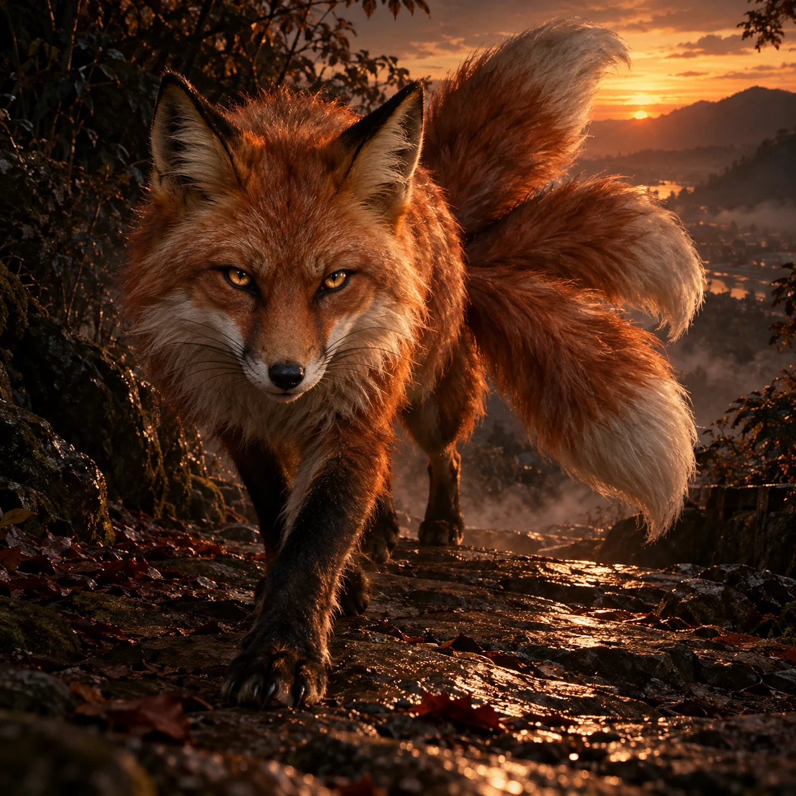
Yuki-cho three-tailed fox variant; no burning tail or transformed woman merged.
Aura: Step down a shadowy path toward the viewer, the three distinct tails spreading behind its turning body, eyes fixed on camera. Visual grounding: osan-kitsune-c01, osan-kitsune-c13.
Audit ciri dan sumber
- [object Object]
- [object Object]
- [object Object]
Native1254 and200px inspected. One fox head,twoeyes,four foxlimbs and exactly THREE separate tails visible c01/c13. Walking frontal fox-spirit glare and three tails dominate. No flames imported from c09, no invented shrine,text,gore or extra heads. All7 Sangar checks pass.
Review sumberONE original square premium painterly cinematic Mythics illustration of Osan Kitsune, the three-tailed fox spirit of the Yuki-cho Hiroshima account. Native square PNG at least1024 by1024 pixels.
ANATOMY: One ordinary fox head with two natural eyes, four fox legs and EXACTLY THREE separate fully visible fox tails. No human face, nine tails, fangs beyond normal fox teeth, flames or crown. [osan-kitsune-c01, osan-kitsune-c13]
MOMENT: Step down a shadowy path toward the viewer, the three distinct tails spreading behind its turning body, eyes fixed on camera.
POWER: No visual magical effect; three documented tails and close movement distinguish the fox spirit. Do not import tail fire from the separate Hiroshima story. [osan-kitsune-c13]
SCALE & CAMERA: extremely close low camera and foreshortening, no invented giant size, no tiny people as size references; distinguishing anatomy readable at200px.
LIGHT & WEATHER: Single low warm sunset source through deep shadow, tangible fur and natural mist.
SURFACE: tactile organic fur, skin, feather, scales, wet wood or opaque cloth corresponding to the documented subject, never plastic.
SETTING: A dark path in Yuki-cho, Hiroshima, without invented shrine imagery. [osan-kitsune-c13]
MOOD: imposing uncanny fox-spirit awe; never cute, calm, static or decorative. Dark walnut, antique-gold and parchment palette with one strong accent.
HARD CONSTRAINTS: no text, glyph, lettering, logo, border, frame or watermark; no extra heads, eyes, arms, legs, fingers or attributes; no film, game, anime or comic adaptation; no nudity or explicit gore; no generic glow aura, neon outline, floating runes or energy ribbons. Anatomical counts in this prompt override generic creature associations.
Panlong (mythology)
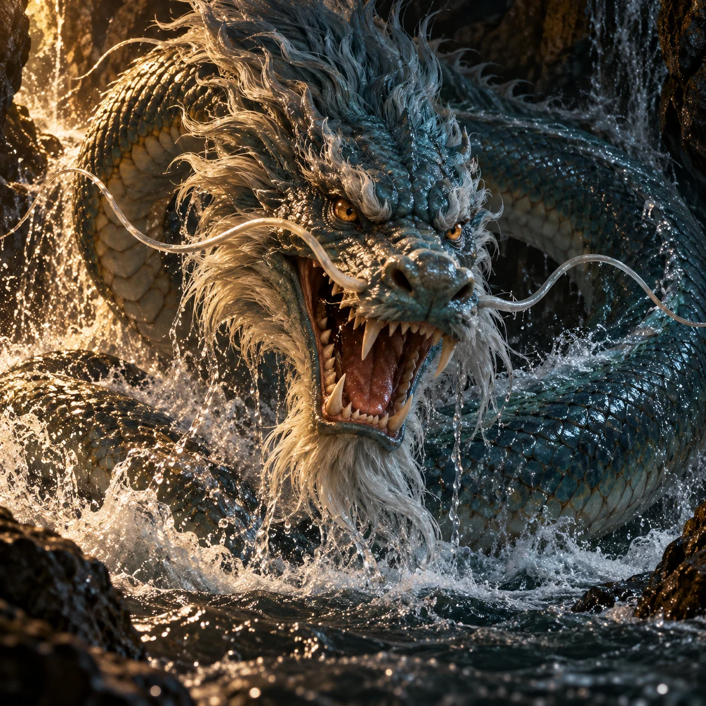
living aquatic Chinese coiled dragon in its lair
Aura: UNCOIL sharply toward the low water-level viewer, head raised out of breaking water while a tight visible circular body pushes water over itself; whiskers whip and jaws open. Supported by panlong-mythology-c01, panlong-mythology-c03, panlong-mythology-c01, panlong-mythology-c01, panlong-mythology-c05.
Audit ciri dan sumber
- [object Object]
- [object Object]
- [object Object]
Native and 200px inspected: living aquatic Chinese dragon face rears toward water-level viewer from TIGHT partly submerged coil c01/c03/c05. Broad muzzle, ridged brow, wet beard/mane and long whiskers explicitly editorial conventional dragon physiognomy; no antlers/wings, limbs and tail end submerged. Bow wave and draining sheets arise only from physical coil movement, no magical rainfall. Dragon face and tight coil remain clear at200px, not python/ornament. One head/two eyes, no text/glow/gore/adaptation; all seven Sangar checks pass.
Review sumberONE original square premium painterly cinematic Mythics illustration of Panlong, living aquatic Chinese coiled dragon in its lair. Native square PNG at least1024x1024.
ANATOMY: ONE living aquatic CHINESE DRAGON, one head/two eyes and continuous scaled body tightly COILED in water. Broad pronounced dragon muzzle, ridged brow, long wet whiskers and coarse beard/mane are conventional editorial dragon physiognomy, not exact sourced iconography. Hornless rendering; limbs and tail end entirely submerged. Not ordinary python/crocodile/statue. [panlong-mythology-c01, panlong-mythology-c03]
MOMENT: UNCOIL sharply toward the low water-level viewer, head raised out of breaking water while a tight visible circular body pushes water over itself; whiskers whip and jaws open.
POWER: Moving aquatic coils physically displace water into a bow wave and draining sheets. Source motif used in rain magic is not a claimed rain-control power. [panlong-mythology-c01]
SCALE & CAMERA: Extreme low close confrontation; head/being fills most frame, distinguishing dragon face visible at200px; no undocumented gigantic body comparisons.
LIGHT & WEATHER: One narrow warm sidelight against deep walnut shadows, hard rim, dark high contrast; physical water or dust only from documented scene.
SURFACE: Living wet scales, coarse mane hairs, rain-wet opaque cloth when clothed, weathered stone or ordinary soil. Never plastic or glazed ornament.
SETTING: Dark aquatic lair, wet rocks framing tight partly submerged coil. [panlong-mythology-c01, panlong-mythology-c05]
MOOD: Reverent overwhelming dragon awe, commanding and imposing, never cute, calm, decorative or ordinary snake.
HARD CONSTRAINTS: No text, lettering, glyphs, logo, border, frame or watermark. No extra heads, eyes, limbs, fingers. No film/game/anime/comic designs, no nudity or explicit gore, no generic glow aura, neon outlines, floating runes or energy ribbons. All clothing fully opaque. Conventional Chinese dragon rendering details are artistic interpretation of documented dragon identity, not new physical powers or claimed exact iconography.
Peng
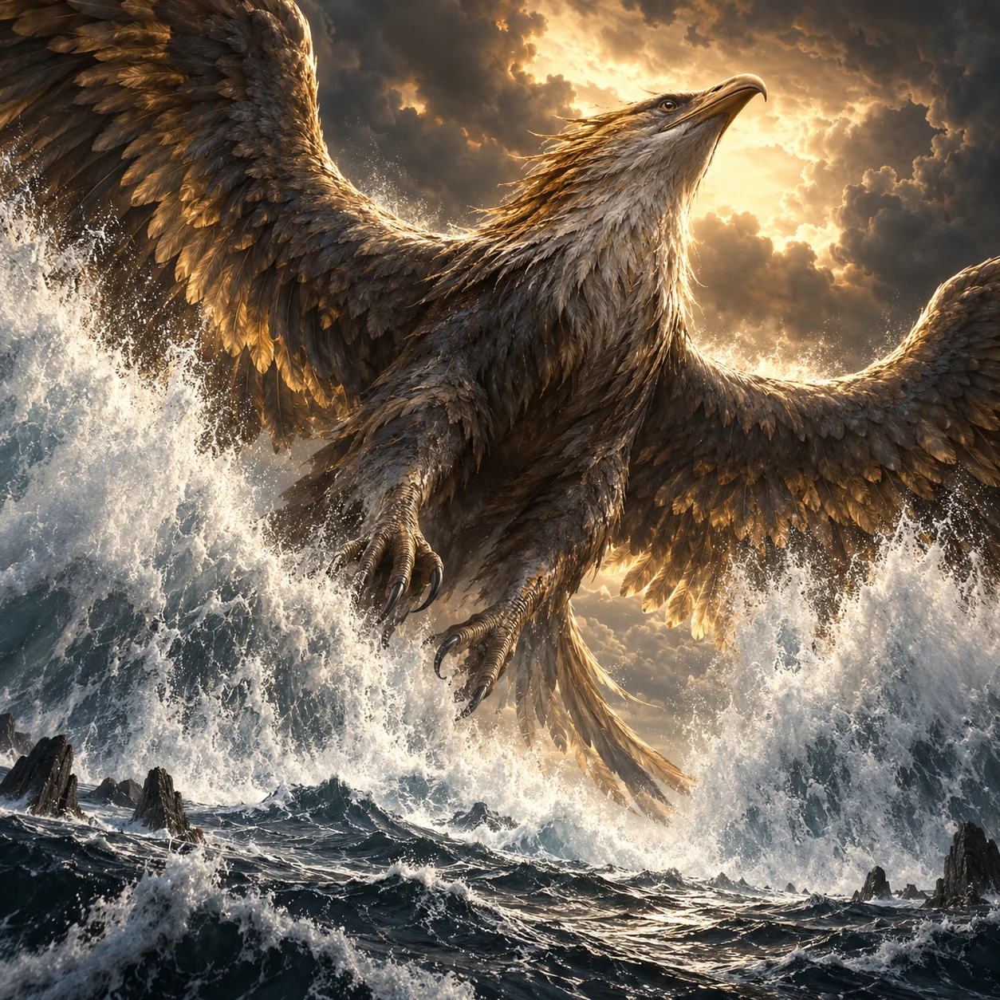
Fully transformed giant Peng bird of Zhuangzi, not Kun fish or Penghou dog.
Aura: Heave upward from the sea toward the viewer, both wings sweeping the water during migration south. Visual grounding: peng-c01, peng-c05, peng-c06.
Audit ciri dan sumber
- [object Object]
- [object Object]
- [object Object]
Native1254 and200px inspected. One colossal bird head,two wings,two feet and one feathertail c01/c05; second eye legitimately occluded in profile. Wings strike huge physical sea spray during migration c06; small rocky references and low camera express documented immense size c05. No fishbody,phoenixdecoration,flame,text or unsupported effects. All7 Sangar checks pass.
Review sumberONE original square premium painterly cinematic Mythics illustration of Peng, the immense bird transformed from Kun in Zhuangzi. Native square PNG at least1024 by1024 pixels.
ANATOMY: ONE colossal bird with one head, two eyes, two immense wings like clouds across the sky, two bird feet and one feather tail; no fish body remains, no human head, horns, phoenix ornaments or flames. [peng-c01, peng-c05]
MOMENT: Heave upward from the sea toward the viewer, both wings sweeping the water during migration south.
POWER: The wings physically beat the sea into a vast wall of spray, as documented water-striking during migration; no lightning or glow. [peng-c06]
SCALE & CAMERA: extreme low angle, documented colossal being fills the frame with tiny sea or land references; distinguishing anatomy readable at200px.
LIGHT & WEATHER: Single immense warm opening in dark cloud behind wing feathers; ocean spray, deep walnut and antique-gold shadows.
SURFACE: tactile organic fur, skin, feather, scales, wet wood or opaque cloth corresponding to the documented subject, never plastic.
SETTING: The sea of the Northern Darkness at the start of migration to the Southern Darkness. [peng-c05, peng-c06]
MOOD: overwhelming cosmic awe; never cute, calm, static or decorative. Dark walnut, antique-gold and parchment palette with one strong accent.
HARD CONSTRAINTS: no text, glyph, lettering, logo, border, frame or watermark; no extra heads, eyes, arms, legs, fingers or attributes; no film, game, anime or comic adaptation; no nudity or explicit gore; no generic glow aura, neon outline, floating runes or energy ribbons. Anatomical counts in this prompt override generic creature associations.
Penghou
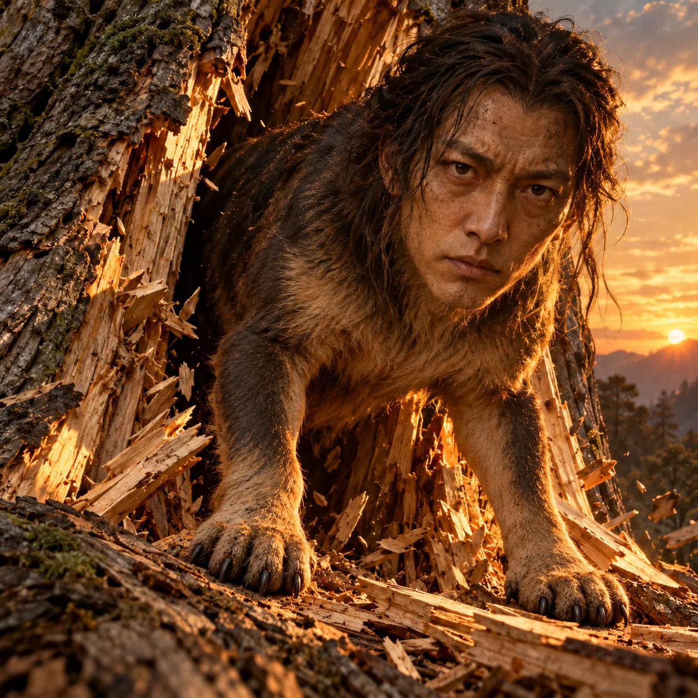
Wu camphor-tree human-face and dog-body variant; not combined with Baize Tu tailless black-dog version.
Aura: Push its human-faced head and dog forequarters out of the split camphor trunk toward the viewer, forepaws braced at the opening. Visual grounding: penghou-c07.
Audit ciri dan sumber
- [object Object]
- [object Object]
- [object Object]
Native1254 and200px inspected after targeted caninepaw edit. Onehumanface/twoeyes on furreddogforequarters with TWO COMPACT fourtoe caninepaws,no longfingers/humanthumbs; hindquarters/tail occluded c07. Physicalwoodchips emerge from felledcamphor c07. Intenseface close lowcomposition gives uncannyspirit dominance. No blood/glow/text or unsupportedpower. All7 Sangar checks pass.
Review sumberONE original square premium painterly cinematic Mythics illustration of Penghou, the human-faced dog-bodied spirit emerging from a camphor tree in the Wu tale. Native square PNG at least1024 by1024 pixels.
ANATOMY: Exactly one HUMAN FACE with two ordinary human eyes on one DOG BODY with four canine legs; no separate dog head. Natural short dark fur is an editorial surface choice. Tail region is entirely hidden behind the tree so no tail variant is asserted. No horns or fangs. [penghou-c07]
MOMENT: Push its human-faced head and dog forequarters out of the split camphor trunk toward the viewer, forepaws braced at the opening.
POWER: Wood splits and chips around the emergence recorded by the tale; no sap blood, wounds or magic glow. [penghou-c07]
SCALE & CAMERA: extremely close low camera and foreshortening, no invented giant size, no tiny people as size references; distinguishing anatomy readable at200px.
LIGHT & WEATHER: One low warm sunset shaft across split wood, dog fur and unsettling human face; natural wood dust.
SURFACE: tactile organic fur, skin, feather, scales, wet wood or opaque cloth corresponding to the documented subject, never plastic.
SETTING: A felled great camphor tree in the Jian'an tale. [penghou-c07]
MOOD: uncanny imposing tree-spirit awe; never cute, calm, static or decorative. Dark walnut, antique-gold and parchment palette with one strong accent.
HARD CONSTRAINTS: no text, glyph, lettering, logo, border, frame or watermark; no extra heads, eyes, arms, legs, fingers or attributes; no film, game, anime or comic adaptation; no nudity or explicit gore; no generic glow aura, neon outline, floating runes or energy ribbons. Anatomical counts in this prompt override generic creature associations.
TARGETED CORRECTION: EDIT only both frontpaws: compact broad rounded DOG PAWS, four short closelypacked toe bumps facingforward, short canine claws; rounded darkpad if undersidesvisible, nohumanthumb,no longfingers,no humanwrist. Retain exactlyhumanface,furreddogbody,splitcamphortree,motion,lighting andallotherparts.
Pincoya
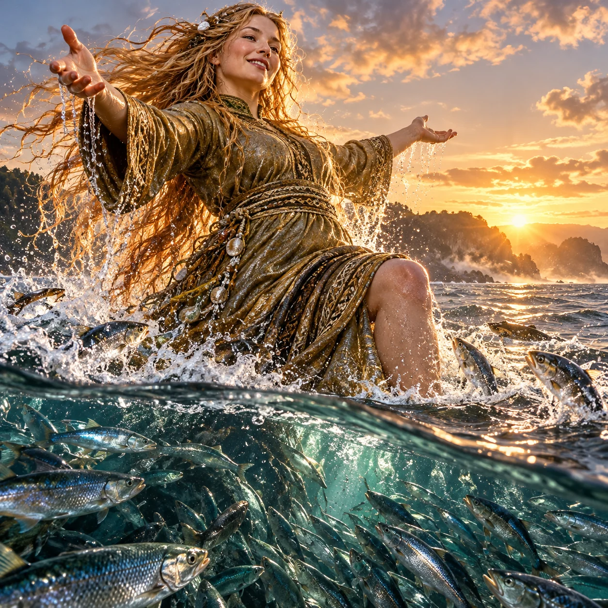
Pincoya, the benevolent Chilotan marine-fertility spirit rising into her sea-facing dance
Aura: RISE from deep seawater and TURN into a sweeping sea-facing fertility dance, one HUMAN knee raised visibly from the wave, both arms sweep toward the open ocean. Bright joyful authoritative face turns threequarters toward viewer; blondhair and opaque dress spiral with dance. Dense fishschools surge toward her below water so she is unmistakably active marine spirit, never a woman strolling on beach. Grounded in pincoya-c02, pincoya-c08, pincoya-c10, pincoya-c03, pincoya-c04, pincoya-c11, pincoya-c01
Audit ciri dan sumber
- [object Object]
- [object Object]
- [object Object]
Native1254 and200px inspected: Pincoya emerges WITHIN sea c02 into sea-facing dance c04,onehuman knee raised,2arms/twohumanlegs nofish-tailc10,longblondhair,fullyopaque thickdress. Dense livingfish converge in water/fewnaturallybreach c03/c11, underwater splitview editorial. Lowcamera creates benevolentfertility awe;no wave-control,levitation orenergy. All7Sangar checks pass;oldordinarybeachfigure archived.
Review sumberONE original square premium painterly cinematic Mythics illustration of Pincoya, the benevolent Chilotan marine-fertility spirit rising into her sea-facing dance.
ANATOMY: ONE beautiful adult WOMAN with very long blond-to-reddish hair, ONE head/TWO eyes/TWO arms/TWO HUMAN LEGS. NO fish-tail, gills, scales or mermaidbody. Entire chest/hips covered by FULLY OPAQUE high-neck long-sleeve thick woven flowing dress, opaque wetfabric, no nudity or sheer cloth. [pincoya-c02, pincoya-c08, pincoya-c10]
MOMENT: RISE from deep seawater and TURN into a sweeping sea-facing fertility dance, one HUMAN knee raised visibly from the wave, both arms sweep toward the open ocean. Bright joyful authoritative face turns threequarters toward viewer; blondhair and opaque dress spiral with dance. Dense fishschools surge toward her below water so she is unmistakably active marine spirit, never a woman strolling on beach.
POWER: Marine fertility visibly acts as great abundance of living fish: dense schools converge within translucent seawater around her emerging sea-facing dance, some naturally breach surface. Fish never fly orlevitate. Sea water falls physically off her body as she rises from depths. No invented wave-control or luminous energy. [pincoya-c02, pincoya-c03, pincoya-c04, pincoya-c11]
SCALE & CAMERA: EXTREME LOW waterline close camera, woman fills70percentof frame, face/arms/raisedknee clearlyvisible. Lower quarter contains an editorial underwater split-view of dense fishschools. No invented gigantic human scale; awe from action/framing/abundance.
LIGHT & WEATHER: ONE copper dawnbacklight through sea spray, deepwalnut ocean shadows andantiquegold hair rim; sourcephysical sea emergence makes water cascade, no glowinghalo.
SURFACE: Wet longhair, coarse thick OPAQUE darkgold woven cloth retaining fullcoverage evenwet, tactile skin, silver fishscales and real whitewater.
SETTING: Open sea beside Chilotan coast, outward sea-facing dance with distantcoast behindsides. [pincoya-c01, pincoya-c02, pincoya-c04]
MOOD: Reverent, benevolent, awe-inspiring, overwhelming grace; never ordinarywoman/photo, static, cute or decorative.
HARD CONSTRAINTS: ONE square native PNG minimum1024x1024; no text, lettering, logo, watermark, border or frame; no invented anatomy, extra heads, limbs, fingers or eyes; no game/film/anime/comic design, no nudity or gore. No generic halo, neon outline, runes, energy ribbons or unclaimed powers. Respect the living tradition.
Phi Pop
Menunggu gambar yang lolos audit
Rantas
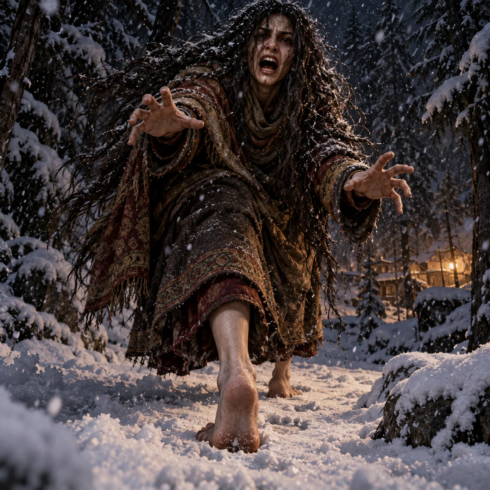
Long-haired sharp-toothed backward-feet winter-wanderer variant; not reversed hands or shapeshift transition.
Aura: Stride and wail toward the viewer through heavy snow, long nails reaching forward while backward toes leave unmistakable reverse footprints. Visual grounding: rantas-c01, rantas-c05, rantas-c02.
Audit ciri dan sumber
- [object Object]
- [object Object]
- [object Object]
Native1254 and200px inspected. One femalehead,twoeyes,twonormalhands with fivefingers each,twolegs; BOTH feet face backwards: roundedheels front,toeclusters behind/side away c01/c05. Longhair,wailing forward motion c05 and heavy snow c02 in forest c10. No invented fangs/claws/icepower,fullopaqueclothes,no text/gore. All7 Sangar checks pass.
Review sumberONE original square premium painterly cinematic Mythics illustration of Rantas, the long-haired female creature that walks backward-footed through Kashmiri winter nights. Native square PNG at least1024 by1024 pixels.
ANATOMY: One female humanoid head with two eyes, long dishevelled hair, ordinary human teeth and ordinary human fingers; two arms and two legs. BOTH feet are anatomically rotated180degrees at the ankles: heels point forward toward camera and toes point BACKWARD away from camera while her chest faces camera. Full opaque layered winter dress covers torso and intimate anatomy; bare feet clearly visible. [rantas-c01, rantas-c05]
MOMENT: Stride and wail toward the viewer through heavy snow, two ordinary hands reaching forward while backward toes leave unmistakable reverse footprints.
POWER: Physical snow is displaced by her documented winter wandering; no invented ice magic or glowing eyes. [rantas-c02, rantas-c05]
SCALE & CAMERA: extremely close low camera and foreshortening, no invented giant size, no tiny people as size references; distinguishing anatomy readable at200px.
LIGHT & WEATHER: One distant warm village lantern source through the moonless snowfall, deep shadows, wet snow in hair.
SURFACE: tactile organic fur, skin, feather, scales, wet wood or opaque cloth corresponding to the documented subject, never plastic.
SETTING: A heavily forested Kashmiri place on a snowy winter night. [rantas-c02, rantas-c10]
MOOD: menacing, dangerous and imposing; never cute, calm, static or decorative. Dark walnut, antique-gold and parchment palette with one strong accent.
HARD CONSTRAINTS: no text, glyph, lettering, logo, border, frame or watermark; no extra heads, eyes, arms, legs, fingers or attributes; no film, game, anime or comic adaptation; no nudity or explicit gore; no generic glow aura, neon outline, floating runes or energy ribbons. Anatomical counts in this prompt override generic creature associations.
FEET DETAIL: Whole figure head to both bare feet inside the square frame. Both heels face forward beneath the forward-facing torso. Toe clusters lie BEHIND both heels, away from camera. Absolutely no claw nails, fangs, horns or hand reversal from other accounts.
Sasabonsam
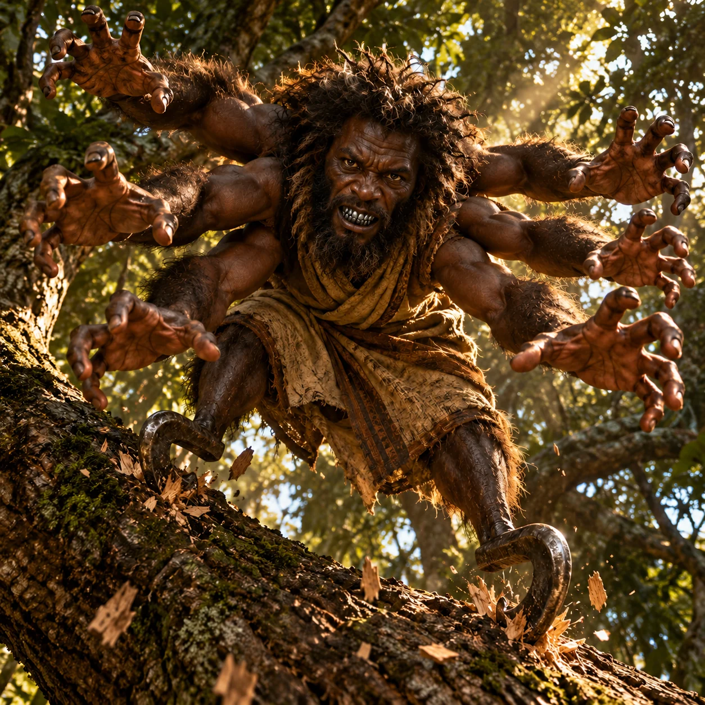
Six-armed iron-toothed hook-legged Asanbosam variant; no bat wings or bidirectional-foot account mixed.
Aura: Drop and reach toward the viewer from a high tree branch, the six arms spread into distinct spaces while two iron-hook feet grip the branch. Visual grounding: sasabonsam-c24, sasabonsam-c25, sasabonsam-c04.
Audit ciri dan sumber
- [object Object]
- [object Object]
- [object Object]
Native1254 and200px inspected. EXACTLYsix complete arms with six fivefingerhands:threeleft,threeright; twolonglegs endingtwometalironhooks c24/c25; onehead/twoeyes/ironmetallicteeth. Leaps/reaches down from highforestbranch c04/c05; hooksdislodge physicalwoodchips. No wings/bidirectionalfeet fromothervariants,opaqueclothes,no gore,text ormagic. All7 Sangar checks pass.
Review sumberONE original square premium painterly cinematic Mythics illustration of Sasabonsam, the six-armed iron-toothed hook-legged Akan being in the Asanbosam account. Native square PNG at least1024 by1024 pixels.
ANATOMY: One humanoid head with two ordinary eyes and clearly METALLIC IRON TEETH, EXACTLY SIX ARMS arranged as three pairs, ALL SIX separate arms and hands entirely visible; EXACTLY TWO legs ending in iron-hook feet. Full opaque simple cloth covers torso and intimate anatomy. No wings, backwards human feet, horns or red glowing eyes. [sasabonsam-c24, sasabonsam-c25]
MOMENT: Drop and reach toward the viewer from a high tree branch, the six arms spread into distinct spaces while two iron-hook feet grip the branch.
POWER: Physical bark chips dislodge under iron hooks; attack from above is documented, without victims, blood or magical effects. [sasabonsam-c04]
SCALE & CAMERA: extremely close low camera and foreshortening, no invented giant size, no tiny people as size references; distinguishing anatomy readable at200px.
LIGHT & WEATHER: One low warm sunlight opening through deep canopy, rim light on six arms and hook feet, natural falling bark.
SURFACE: tactile organic fur, skin, feather, scales, wet wood or opaque cloth corresponding to the documented subject, never plastic.
SETTING: A high branch in dark forest trees. [sasabonsam-c05]
MOOD: formidable mythic awe, dangerous without caricature; never cute, calm, static or decorative. Dark walnut, antique-gold and parchment palette with one strong accent.
HARD CONSTRAINTS: no text, glyph, lettering, logo, border, frame or watermark; no extra heads, eyes, arms, legs, fingers or attributes; no film, game, anime or comic adaptation; no nudity or explicit gore; no generic glow aura, neon outline, floating runes or energy ribbons. Anatomical counts in this prompt override generic creature associations.
TARGETED CORRECTION: Edit priorimage: ADD exactly one complete visible right-side middle arm with hand in the space between the existing upper-right and lower-right arms. Final exactlyTHREE arms left, THREEarms right, sixhands. Show all6shoulder/elbow/wrist connections. Keep2ironhookfeet,opaqueclothes andtreeaction; renderteeth darkpolishediron. Do not remove or duplicate anyexistingarm.